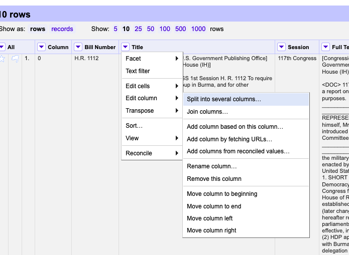
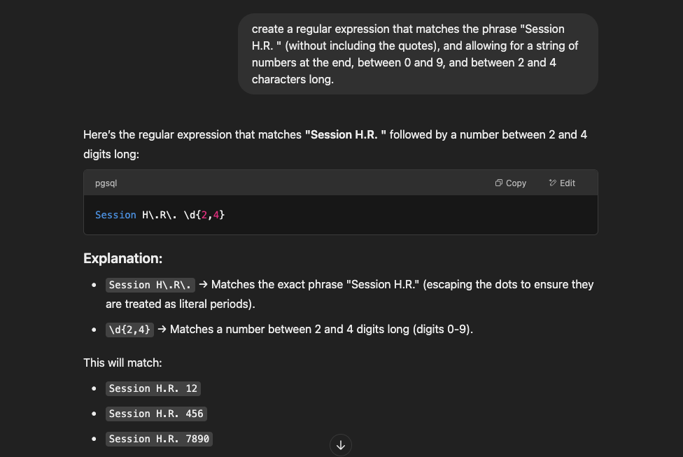
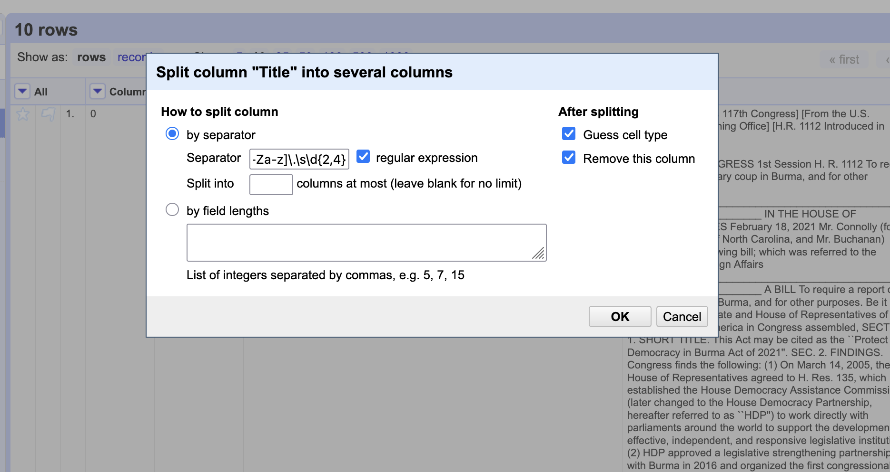
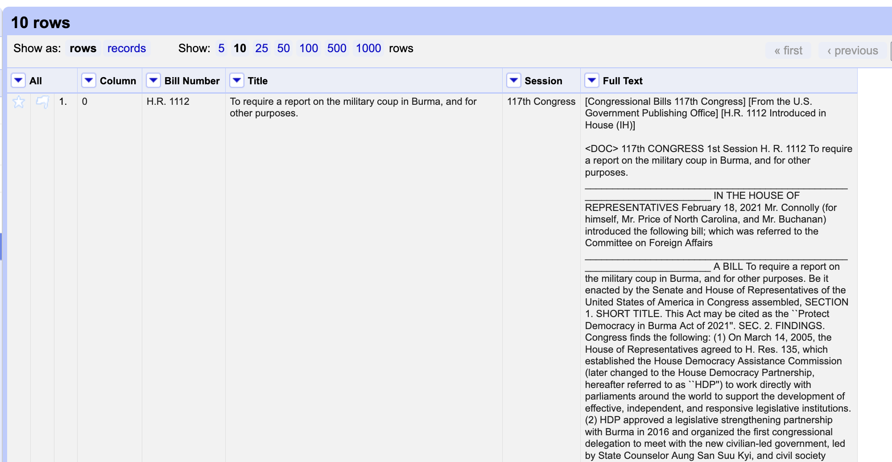

cleaning our text#
In this section we will clean the bill text that we scraped from the last section. We will do this in the following steps:
get our text (if we don’t already have it loaded up) from either scraping or loading the file from the previous section.
inspect our text to identify elements that we want to clean
write loops to remove these elements from the text
learn about functions so we can write one to clean our text in an automatic way
keep improving the funtion to clean more and more elements
Then, at the end, we will look at other tools (ChatGPT and OpenRefine) to help with the cleaning process.
# run the lines below to load up the text from the course website
import requests
source = requests.get('https://bit.ly/transgender_text')
text = source.content
text[:100]
b'<html><body><pre>\n[Congressional Bills 117th Congress]\n[From the U.S. Government Publishing Office]\n'
type(text)
bytes
text = text.decode('utf-8')
# alternatively, uncomment the bottom four lines to load it from your own space
# notice that the data is already in a string format.
# load = open('sample.txt')
# loaded_text = load.read()
# load.close()
# loaded_text[:100]
inspecting our text#
Remember slicing? Take some slices of the text to see what elements we want to clean. Come up with a list of things that we want to remove.
text[:1000]
'<html><body><pre>\n[Congressional Bills 117th Congress]\n[From the U.S. Government Publishing Office]\n[H.R. 1112 Introduced in House (IH)]\n\n<DOC>\n\n\n\n\n\n\n117th CONGRESS\n 1st Session\n H. R. 1112\n\n To require a report on the military coup in Burma, and for other \n purposes.\n\n\n_______________________________________________________________________\n\n\n IN THE HOUSE OF REPRESENTATIVES\n\n February 18, 2021\n\n Mr. Connolly (for himself, Mr. Price of North Carolina, and Mr. \n Buchanan) introduced the following bill; which was referred to the \n Committee on Foreign Affairs\n\n_______________________________________________________________________\n\n A BILL\n\n\n \n To require a report on the military coup in Burma, and for other \n purposes.\n\n Be it enacted by the Senate and House of Representatives of the'
text[3000:4000]
"due to the Burmese military's \n actions directly threatens the democratic trajectory of Burma's \n Parliament, and thereby the country;\n (3) the will and determination of those duly-elected \n Members of Parliament who are taking it upon themselves to \n continue serving as representatives of the people through \n alternative methods of communicating and convening should be \n lauded; and\n (4) by preventing the Parliament from completing its work, \n the Burmese military has rendered impossible and effectively \n nullified the international collaborative relationships that \n have supported and strengthened the institution, including the \n Burmese parliament's partnership with HDP.\n\nSEC. 4. STATEMENT OF POLICY.\n\n It is the policy of the United States to--\n (1) engage with the Association of Southeast Asian Nations \n (ASEAN) and ASEAN member states to--\n (A) condem"
looping through the text to replace() it#
These are the elements we want to clean, as well as the large blank spaces:
\n
/n
\\n
_
[
]
<html><body><pre>
<html><body><pre>
When you have a lot of items to remove at once, it’s best to put them into a list. Then we can write a loop that goes through each item in the “take out” list to see if it’s in the text data. If it is, we will replace that item with a blank space.
to_take_out = ['\n', '/n', '\\n', '_', '[', ']', '<html><body><pre>', '<html><body><pre>', ' ']
for item in to_take_out:
if item in text:
# here is a complicated line of code:
# we are replacing the item with nothing, indicated by two quotes
# then we are saving those results to "text", effectively overwriting
# the variable.
text = text.replace(item, '')
text[:1000]
"Congressional Bills 117th CongressFrom the U.S. Government Publishing OfficeH.R. 1112 Introduced in House (IH)<DOC>117th CONGRESS1st SessionH. R. 1112 To require a report on the military coup in Burma, and for otherpurposes.IN THE HOUSE OF REPRESENTATIVES February 18, 2021Mr. Connolly (for himself, Mr. Price of North Carolina, and Mr. Buchanan) introduced the following bill; which was referred to the Committee on Foreign Affairs A BILLTo require a report on the military coup in Burma, and for otherpurposes.Be it enacted by the Senate and House of Representatives of the United States of America in Congress assembled,SECTION 1. SHORT TITLE.This Act may be cited as the ``Protect Democracy in Burma Act of 2021''.SEC. 2. FINDINGS.Congress finds the following:(1) On March 14, 2005, the House of Representatives agreed to H. Res. 135, which established the House Democracy Assistance Commission (later changed to the House Democracy Partnership, hereafter referred to as ``HDP'') to work di"
challenge: replacing with spaces#
Notice that now some of the words in our dataset are joined with other words. That’s because we took out the new lines. How could we change the code so that we keep spaces between words?
function to automate cleaning#
Let’s say we want to do this to many bits of text, not just one. We could automate the work by writing a function that can run on as many texts as we want.
Functions have two key components: the definition and the call. You first define the function and what it does, then you “call” it to get it to work on a particular piece of data.
Let’s start with the definition. First, you name the function, and include parentheses for your parameters (more on this in a moment). Then, in the body of the definition, you write whatever python code you want to execute for that function. Finally, you have a return statement that saves or “returns” the result, so to speak, from the function.
def add(x,y):
answer = x + y
return answer
Then we call the function.
add(5, 10021)
10026
The basic idea is that the input data, whatever data you want the function to work with, goes inside the parentheses. So that within the body of the function definition, that input data (known formally as “parameters”) gets assigned to whatever variable is in the definition.
This makes functions portable, so to speak, as you can write one, then call it using whatever input data that you like.
What would a function for our text cleaner look like?
# remove all the characters in the "take out" list by writing a
# loop that replaces those characters with an empty character, ''
def clean_up(data):
to_take_out = ['\n', '/n', '\\n', '_', '[', ']', '<html><body><pre>', '<html><body><pre>', ' ']
for item in to_take_out:
if item in data:
data = data.replace(item, '')
return data
cleaned = clean_up(text)
cleaned[:1000]
"Congressional Bills 117th CongressFrom the U.S. Government Publishing OfficeH.R. 1112 Introduced in House (IH)<DOC>117th CONGRESS1st SessionH. R. 1112 To require a report on the military coup in Burma, and for otherpurposes.IN THE HOUSE OF REPRESENTATIVES February 18, 2021Mr. Connolly (for himself, Mr. Price of North Carolina, and Mr. Buchanan) introduced the following bill; which was referred to the Committee on Foreign Affairs A BILLTo require a report on the military coup in Burma, and for otherpurposes.Be it enacted by the Senate and House of Representatives of the United States of America in Congress assembled,SECTION 1. SHORT TITLE.This Act may be cited as the ``Protect Democracy in Burma Act of 2021''.SEC. 2. FINDINGS.Congress finds the following:(1) On March 14, 2005, the House of Representatives agreed to H. Res. 135, which established the House Democracy Assistance Commission (later changed to the House Democracy Partnership, hereafter referred to as ``HDP'') to work di"
Finally, we save our text. And that’s it!
with open('clean_sample.txt', 'w') as f:
f.write(cleaned)
cleaning with chatgpt#
prompt: clean all of the blank spaces and extraneous characters from this text with python.#
import re
from html import unescape
def clean_text(text):
# Remove HTML tags
text = re.sub(r'<.*?>', '', text)
# Unescape HTML entities
text = unescape(text)
# Remove extra blank lines and whitespace
text = re.sub(r'\n\s*\n', '\n', text) # Remove multiple newlines
text = re.sub(r'\s+', ' ', text).strip() # Normalize spaces
return text
text = clean_text(text)
text[:10000]
"Congressional Bills 117th CongressFrom the U.S. Government Publishing OfficeH.R. 1112 Introduced in House (IH)<DOC>117th CONGRESS1st SessionH. R. 1112 To require a report on the military coup in Burma, and for otherpurposes.IN THE HOUSE OF REPRESENTATIVES February 18, 2021Mr. Connolly (for himself, Mr. Price of North Carolina, and Mr. Buchanan) introduced the following bill; which was referred to the Committee on Foreign Affairs A BILLTo require a report on the military coup in Burma, and for otherpurposes.Be it enacted by the Senate and House of Representatives of the United States of America in Congress assembled,SECTION 1. SHORT TITLE.This Act may be cited as the ``Protect Democracy in Burma Act of 2021''.SEC. 2. FINDINGS.Congress finds the following:(1) On March 14, 2005, the House of Representatives agreed to H. Res. 135, which established the House Democracy Assistance Commission (later changed to the House Democracy Partnership, hereafter referred to as ``HDP'') to work directly with parliaments around the world to support the development of effective, independent, and responsive legislative institutions.(2) HDP approved a legislative strengthening partnership with Burma in 2016 and organized the first congressional delegation to meet with the new civilian-led government, led by State Counselor Aung San Suu Kyi, and civil society leaders in May 2016.(3) On February 2, 2021, the U.S. Department of State assessed that Daw Aung San Suu Kyi, the leader of Burma's ruling party, and President Win Myint, the duly elected head of government, were deposed in a military coup on February 1, 2021.(4) As part of the military coup, the Burmese military declared martial law, suspended the civilian-led government, and detained newly elected Members of Parliament in the capitol, Naypyidaw, thereby usurping the role of the democratically elected government and parliament.SEC. 3. SENSE OF CONGRESS.It is the sense of Congress that--(1) due to the Burmese military's seizure of government through the detention of State Counsellor Aung San Suu Kyi, President Win Myint, and other government leaders, Burma is not represented by a democratically elected government;(2) the inability of newly elected Members of Parliament to begin their official mandate due to the Burmese military's actions directly threatens the democratic trajectory of Burma's Parliament, and thereby the country;(3) the will and determination of those duly-elected Members of Parliament who are taking it upon themselves to continue serving as representatives of the people through alternative methods of communicating and convening should be lauded; and(4) by preventing the Parliament from completing its work, the Burmese military has rendered impossible and effectively nullified the international collaborative relationships that have supported and strengthened the institution, including the Burmese parliament's partnership with HDP.SEC. 4. STATEMENT OF POLICY.It is the policy of the United States to--(1) engage with the Association of Southeast Asian Nations (ASEAN) and ASEAN member states to--(A) condemn the military coup in Burma;(B) urge the unconditional release of detained democratically elected leaders and civil society members; and(C) support a return to Burma's democratic transition; and(2) instruct, as appropriate, representatives of the United States Government to use the voice, vote, and influence of the United States at the United Nations to hold accountable those responsible for the military coup in Burma.SEC. 5. REPORT.Not later than 90 days after the date of the enactment of this Act, the Secretary of State shall submit to the Committee on Foreign Affairs and the Committee on Appropriations of the House of Representatives and the Committee on Foreign Relations and the Committee on Appropriations of the Senate a report on the military coup in Burma, including a description of efforts to implement the policy specified in section 4. <all>Congressional Bills 117th CongressFrom the U.S. Government Publishing OfficeH.R. 435 Introduced in House (IH)<DOC>117th CONGRESS1st SessionH. R. 435 To exclude from tax certain payments of Federal pandemic unemploymentcompensation, and for other purposes.IN THE HOUSE OF REPRESENTATIVESJanuary 21, 2021 Ms. Velazquez (for herself, Ms. Norton, Ms. Williams of Georgia, Mr. Smith of Washington, Ms. Jayapal, Mr. Meeks, Mr. Welch, Ms. Schakowsky, Ms. Kaptur, Ms. Tlaib, Ms. Wild, Ms. Newman, Ms. Lee of California, Ms. Meng, and Mr. Nadler) introduced the following bill; which was referredto the Committee on Ways and Means A BILLTo exclude from tax certain payments of Federal pandemic unemploymentcompensation, and for other purposes.Be it enacted by the Senate and House of Representatives of the United States of America in Congress assembled,SECTION 1. SHORT TITLE.This Act may be cited as the ``Excluding Pandemic Unemployment Compensation from Income Act''.SEC. 2. CERTAIN PAYMENTS OF FEDERAL PANDEMIC UNEMPLOYMENT COMPENSATION NOT INCLUDIBLE IN GROSS INCOME OR TAKEN INTO ACCOUNT IN DETERMINING CERTAIN MEANS-TESTED BENEFITS.(a) Exclusion From Gross Income.--For purposes of the Internal Revenue Code of 1986, gross income shall not include the amount specified in section 2104(b)(3) of the CARES Act to the extent such amount is received by the taxpayer pursuant to section 2102, 2104, or 2107 of such Act.(b) Disregarded in the Administration of Federal Programs and Federally Assisted Programs.--For purposes of section 6409 of the Internal Revenue Code of 1986, any amount excluded from gross income under subsection (a) shall be treated in the same manner as a refund under such Code.(c) Effective Dates.--(1) Exclusion.--Subsection (a) shall apply to taxable years ending after the date of the enactment of the CARES Act.(2) Disregard.--Subsection (b) shall apply to amounts received after the date of the enactment of the CARES Act. <all>Congressional Bills 117th CongressFrom the U.S. Government Publishing OfficeH.R. 886 Introduced in House (IH)<DOC>117th CONGRESS1st SessionH. R. 886 To provide funds through the Social Services Block Grant program fordiaper assistance.IN THE HOUSE OF REPRESENTATIVESFebruary 5, 2021Ms. Lee of California (for herself, Mr. Rush, Mr. Carson, Ms. Meng, Mr. Sires, and Mrs. Hayes) introduced the following bill; which was referred to the Committee on Ways and Means A BILLTo provide funds through the Social Services Block Grant program fordiaper assistance.Be it enacted by the Senate and House of Representatives of the United States of America in Congress assembled,SECTION 1. SHORT TITLE.This Act may be cited as the ``COVID-19 Diaper Assistance Act''.SEC. 2. FINDINGS.Congress finds the following:(1) Infants need between 6 to 12 diapers a day. Infants and toddlers lacking access to clean diapers have a greater risk for health complications, which require costly and difficult to access medical care.(2) Prior to the COVID-19 pandemic, surveys indicated that 1 in 3 families in the United States with young children could not afford an adequate supply of diapers to keep their child clean, dry, and healthy.(3) Low-income families pay an even higher than average price for diapers because they do not have access to money saving alternatives such as bulk buying or online shopping that can reduce costs. Low-income families spend about 14 percent of their income on diapers.(4) Clean diaper access presents a financial and stressful burden on families' dependent on child care services. Research indicates that when diaper need is a barrier to child care, parents miss an average of 4 workdays a month.(5) The COVID-19 pandemic has further raised demand for diapers and strained diaper banks' ability to meet low-income families' needs. Prior to the COVID-19 pandemic, nonprofit diaper bank distribution only met 5 to 6 percent of diaper need. Since the start of the COVID-19 pandemic, diaper banks around the country have experienced double, triple, or greater increase in demand for diapers due to the pandemic and economic shutdown. Nonprofits alone cannot fully address this public health crisis that impacts 1 in 3 families in the United States.SEC. 3. TARGETED FUNDING FOR STATES FOR DIAPER ASSISTANCE THROUGH THE SOCIAL SERVICES BLOCK GRANT PROGRAM.(a) Increase in Funding for Social Services Block Grant Program.--(1) In general.--The amount specified in subsection (c) of section 2003 of the Social Security Act (42 U.S.C. 1397b) for purposes of subsections (a) and (b) of such section is deemed to be $1,900,000,000 for fiscal year 2021, of which $200,000,000 shall be obligated by States in accordance with subsection (b).(2) Appropriation.--Out of any money in the Treasury of the United States not otherwise appropriated, there are appropriated $200,000,000, which shall be available for payments under section 2002 of the Social Security Act (42 U.S.C. 1397a), which shall remain available for expenditure through December 31, 2022.(3) Deadline for distribution of funds.--Within 45 days after the date of enactment of this Act, the Secretary of Health and Human Services shall distribute the funds made available by this subsection, which shall be made available to States on an emergency basis for immediate obligation and expenditure.(4) Submission of revised pre-expenditure report.--Within 90 days after a State receives funds made available by this subsection, the State shall submit to the Secretary of Health and Human Services a revised pre-expenditure report pursuant to subtitle A of title XX of the Social Security Act (42 U.S.C. 1397 et seq,.) that describes how the State plans to administer the funds in accordance with subsection (b).(5) Deadline for obligation of funds by states.--A State to which funds made available by this subsection are distributed shall obligate the funds not later than December 31, 2021.(6) Deadline for expenditure of funds.--A grantee to which a State provides funds made available by this subsection (or a subgrantee "
follow-up prompt:#
This text is a collection of legislative bills. Now write me some code that separates the long string of text into individual bills.
def split_bills(text):
# Define a regex pattern to detect the start of a new bill
bill_pattern = re.compile(r'(?=\d{3}th CONGRESS\s+\d{1,2}st Session\s+H\. R\. \d+)', re.MULTILINE)
# Split the text using the pattern
bills = bill_pattern.split(text)
# Remove empty entries and strip whitespace
bills = [bill.strip() for bill in bills if bill.strip()]
return bills
bills = split_bills(text)
type(bills)
list
len(bills)
1
bills[0]
"Congressional Bills 117th CongressFrom the U.S. Government Publishing OfficeH.R. 1112 Introduced in House (IH)<DOC>117th CONGRESS1st SessionH. R. 1112 To require a report on the military coup in Burma, and for otherpurposes.IN THE HOUSE OF REPRESENTATIVES February 18, 2021Mr. Connolly (for himself, Mr. Price of North Carolina, and Mr. Buchanan) introduced the following bill; which was referred to the Committee on Foreign Affairs A BILLTo require a report on the military coup in Burma, and for otherpurposes.Be it enacted by the Senate and House of Representatives of the United States of America in Congress assembled,SECTION 1. SHORT TITLE.This Act may be cited as the ``Protect Democracy in Burma Act of 2021''.SEC. 2. FINDINGS.Congress finds the following:(1) On March 14, 2005, the House of Representatives agreed to H. Res. 135, which established the House Democracy Assistance Commission (later changed to the House Democracy Partnership, hereafter referred to as ``HDP'') to work directly with parliaments around the world to support the development of effective, independent, and responsive legislative institutions.(2) HDP approved a legislative strengthening partnership with Burma in 2016 and organized the first congressional delegation to meet with the new civilian-led government, led by State Counselor Aung San Suu Kyi, and civil society leaders in May 2016.(3) On February 2, 2021, the U.S. Department of State assessed that Daw Aung San Suu Kyi, the leader of Burma's ruling party, and President Win Myint, the duly elected head of government, were deposed in a military coup on February 1, 2021.(4) As part of the military coup, the Burmese military declared martial law, suspended the civilian-led government, and detained newly elected Members of Parliament in the capitol, Naypyidaw, thereby usurping the role of the democratically elected government and parliament.SEC. 3. SENSE OF CONGRESS.It is the sense of Congress that--(1) due to the Burmese military's seizure of government through the detention of State Counsellor Aung San Suu Kyi, President Win Myint, and other government leaders, Burma is not represented by a democratically elected government;(2) the inability of newly elected Members of Parliament to begin their official mandate due to the Burmese military's actions directly threatens the democratic trajectory of Burma's Parliament, and thereby the country;(3) the will and determination of those duly-elected Members of Parliament who are taking it upon themselves to continue serving as representatives of the people through alternative methods of communicating and convening should be lauded; and(4) by preventing the Parliament from completing its work, the Burmese military has rendered impossible and effectively nullified the international collaborative relationships that have supported and strengthened the institution, including the Burmese parliament's partnership with HDP.SEC. 4. STATEMENT OF POLICY.It is the policy of the United States to--(1) engage with the Association of Southeast Asian Nations (ASEAN) and ASEAN member states to--(A) condemn the military coup in Burma;(B) urge the unconditional release of detained democratically elected leaders and civil society members; and(C) support a return to Burma's democratic transition; and(2) instruct, as appropriate, representatives of the United States Government to use the voice, vote, and influence of the United States at the United Nations to hold accountable those responsible for the military coup in Burma.SEC. 5. REPORT.Not later than 90 days after the date of the enactment of this Act, the Secretary of State shall submit to the Committee on Foreign Affairs and the Committee on Appropriations of the House of Representatives and the Committee on Foreign Relations and the Committee on Appropriations of the Senate a report on the military coup in Burma, including a description of efforts to implement the policy specified in section 4. <all>Congressional Bills 117th CongressFrom the U.S. Government Publishing OfficeH.R. 435 Introduced in House (IH)<DOC>117th CONGRESS1st SessionH. R. 435 To exclude from tax certain payments of Federal pandemic unemploymentcompensation, and for other purposes.IN THE HOUSE OF REPRESENTATIVESJanuary 21, 2021 Ms. Velazquez (for herself, Ms. Norton, Ms. Williams of Georgia, Mr. Smith of Washington, Ms. Jayapal, Mr. Meeks, Mr. Welch, Ms. Schakowsky, Ms. Kaptur, Ms. Tlaib, Ms. Wild, Ms. Newman, Ms. Lee of California, Ms. Meng, and Mr. Nadler) introduced the following bill; which was referredto the Committee on Ways and Means A BILLTo exclude from tax certain payments of Federal pandemic unemploymentcompensation, and for other purposes.Be it enacted by the Senate and House of Representatives of the United States of America in Congress assembled,SECTION 1. SHORT TITLE.This Act may be cited as the ``Excluding Pandemic Unemployment Compensation from Income Act''.SEC. 2. CERTAIN PAYMENTS OF FEDERAL PANDEMIC UNEMPLOYMENT COMPENSATION NOT INCLUDIBLE IN GROSS INCOME OR TAKEN INTO ACCOUNT IN DETERMINING CERTAIN MEANS-TESTED BENEFITS.(a) Exclusion From Gross Income.--For purposes of the Internal Revenue Code of 1986, gross income shall not include the amount specified in section 2104(b)(3) of the CARES Act to the extent such amount is received by the taxpayer pursuant to section 2102, 2104, or 2107 of such Act.(b) Disregarded in the Administration of Federal Programs and Federally Assisted Programs.--For purposes of section 6409 of the Internal Revenue Code of 1986, any amount excluded from gross income under subsection (a) shall be treated in the same manner as a refund under such Code.(c) Effective Dates.--(1) Exclusion.--Subsection (a) shall apply to taxable years ending after the date of the enactment of the CARES Act.(2) Disregard.--Subsection (b) shall apply to amounts received after the date of the enactment of the CARES Act. <all>Congressional Bills 117th CongressFrom the U.S. Government Publishing OfficeH.R. 886 Introduced in House (IH)<DOC>117th CONGRESS1st SessionH. R. 886 To provide funds through the Social Services Block Grant program fordiaper assistance.IN THE HOUSE OF REPRESENTATIVESFebruary 5, 2021Ms. Lee of California (for herself, Mr. Rush, Mr. Carson, Ms. Meng, Mr. Sires, and Mrs. Hayes) introduced the following bill; which was referred to the Committee on Ways and Means A BILLTo provide funds through the Social Services Block Grant program fordiaper assistance.Be it enacted by the Senate and House of Representatives of the United States of America in Congress assembled,SECTION 1. SHORT TITLE.This Act may be cited as the ``COVID-19 Diaper Assistance Act''.SEC. 2. FINDINGS.Congress finds the following:(1) Infants need between 6 to 12 diapers a day. Infants and toddlers lacking access to clean diapers have a greater risk for health complications, which require costly and difficult to access medical care.(2) Prior to the COVID-19 pandemic, surveys indicated that 1 in 3 families in the United States with young children could not afford an adequate supply of diapers to keep their child clean, dry, and healthy.(3) Low-income families pay an even higher than average price for diapers because they do not have access to money saving alternatives such as bulk buying or online shopping that can reduce costs. Low-income families spend about 14 percent of their income on diapers.(4) Clean diaper access presents a financial and stressful burden on families' dependent on child care services. Research indicates that when diaper need is a barrier to child care, parents miss an average of 4 workdays a month.(5) The COVID-19 pandemic has further raised demand for diapers and strained diaper banks' ability to meet low-income families' needs. Prior to the COVID-19 pandemic, nonprofit diaper bank distribution only met 5 to 6 percent of diaper need. Since the start of the COVID-19 pandemic, diaper banks around the country have experienced double, triple, or greater increase in demand for diapers due to the pandemic and economic shutdown. Nonprofits alone cannot fully address this public health crisis that impacts 1 in 3 families in the United States.SEC. 3. TARGETED FUNDING FOR STATES FOR DIAPER ASSISTANCE THROUGH THE SOCIAL SERVICES BLOCK GRANT PROGRAM.(a) Increase in Funding for Social Services Block Grant Program.--(1) In general.--The amount specified in subsection (c) of section 2003 of the Social Security Act (42 U.S.C. 1397b) for purposes of subsections (a) and (b) of such section is deemed to be $1,900,000,000 for fiscal year 2021, of which $200,000,000 shall be obligated by States in accordance with subsection (b).(2) Appropriation.--Out of any money in the Treasury of the United States not otherwise appropriated, there are appropriated $200,000,000, which shall be available for payments under section 2002 of the Social Security Act (42 U.S.C. 1397a), which shall remain available for expenditure through December 31, 2022.(3) Deadline for distribution of funds.--Within 45 days after the date of enactment of this Act, the Secretary of Health and Human Services shall distribute the funds made available by this subsection, which shall be made available to States on an emergency basis for immediate obligation and expenditure.(4) Submission of revised pre-expenditure report.--Within 90 days after a State receives funds made available by this subsection, the State shall submit to the Secretary of Health and Human Services a revised pre-expenditure report pursuant to subtitle A of title XX of the Social Security Act (42 U.S.C. 1397 et seq,.) that describes how the State plans to administer the funds in accordance with subsection (b).(5) Deadline for obligation of funds by states.--A State to which funds made available by this subsection are distributed shall obligate the funds not later than December 31, 2021.(6) Deadline for expenditure of funds.--A grantee to which a State provides funds made available by this subsection (or a subgrantee of such a grantee) shall expend the funds not later than December 31, 2022.(b) Rules Governing Use of Additional Funds.--Funds are used in accordance with this subsection if--(1) the funds are used to provide through social service agencies or other nonprofit organizations, diapers and diapering supplies (including diaper wipes and diaper cream, necessary to ensure that a child using a diaper is properly cleaned and protected from diaper rash) to families in need;(2) the funds are used subject to the limitations in section 2005 of the Social Security Act (42 U.S.C. 1397d);(3) the funds are used to supplement, not supplant, State general revenue funds provided for the purposes described in paragraph (1); and(4) the funds are not used for costs that are reimbursable by the Federal Emergency Management Agency, under a contract for insurance, or by self-insurance.(c) Reports.--(1) Grantees and subgrantees.--Not later than December 31, 2022, each grantee to which a State provides funds made available by subsection (a) (or a subgrantee of such a grantee) shall submit a report to the State on the use of the funds so provided.(2) SSBG annual report.--A State shall include in the annual report required under section 2006 of the Social Security Act (42 U.S.C. 1397e) covering fiscal year 2023, information detailing how grantees and subgrantees used funds made available under subsection (a) to distribute diapers and diapering supplies to families in need. <all>Congressional Bills 117th CongressFrom the U.S. Government Publishing OfficeH.R. 464 Introduced in House (IH)<DOC>117th CONGRESS1st SessionH. R. 464To realign the nuclear forensics and attribution activities of the Federal Government from the Department of Homeland Security to theNational Nuclear Security Administration.IN THE HOUSE OF REPRESENTATIVESJanuary 25, 2021 Mr. Foster (for himself and Mr. Fortenberry) introduced the followingbill; which was referred to the Committee on Energy and Commerce, and in addition to the Committees on Armed Services, Homeland Security, and Foreign Affairs, for a period to be subsequently determined by the Speaker, in each case for consideration of such provisions as fallwithin the jurisdiction of the committee concerned A BILL To realign the nuclear forensics and attribution activities of the Federal Government from the Department of Homeland Security to theNational Nuclear Security Administration.Be it enacted by the Senate and House of Representatives of the United States of America in Congress assembled,SECTION 1. SHORT TITLE.This Act may be cited as the ``Nuclear Forensics Authority Realignment Act''.SEC. 2. ESTABLISHMENT OF NATIONAL NUCLEAR FORENSICS CENTER.(a) Establishment.--(1) In general.--The National Nuclear Security Administration Act (50 U.S.C. 2401 et seq.) is amended by inserting after section 3221 the following new section:``SEC. 3222. NATIONAL NUCLEAR FORENSICS CENTER.``(a) Establishment.--There is within the Administration a National Nuclear Forensics Center (in this section referred to as the `Center').``(b) Mission.--The mission of the Center shall be to coordinate stewardship, planning, assessment, gap analysis, exercises, improvement, including operational improvements and research, development, testing, and evaluation, and integration for all Federal nuclear forensics and attribution activities to ensure an enduring national technical nuclear forensics capability to strengthen the collective response of the United States to nuclear terrorism or other nuclear attacks.''.(2) Clerical amendment.--The table of contents at the beginning of such Act is amended by inserting after the item relating to section 3221 the following new item:``Sec. 3222. National Nuclear Forensics Center.''.(3) Nuclear forensics expertise.--Not later than one year after the date of the enactment of this Act, the Administrator for Nuclear Security shall develop and implement a plan to modify the university program of the National Nuclear Security Administration established under section 4814 of the Atomic Energy Defense Act (50 U.S.C. 2795) to include the development of expertise in nuclear forensics in supporting scientific and engineering advancement in key Department of Energy defense and national security program areas.(b) Conforming Repeals.--(1) In general.--The Nuclear Forensics and Attribution Act (Public Law 111-140) is hereby repealed.(2) Homeland security act of 2002.--Title XIX of the Homeland Security Act of 2002 (6 U.S.C. 590 et seq.) is amended as follows:(A) In section 1923--(i) in subsection (a)--(I) by striking ``(a) Mission.--'';(II) in paragraph (9), by striking the semicolon and inserting ``; and'';(III) by striking paragraphs (10), (11), (12), and (13); and(IV) by redesignating paragraph (14) as paragraph (10); and(ii) by striking subsection (b).(B) In section 1927(a)(1) (6 U.S.C. 596a(a)(1))--(i) in subparagraph (A)(ii), by striking the semicolon and inserting ``; and'';(ii) in subparagraph (B)(iii), by striking ``; and'' and inserting a period; and(iii) by striking subparagraph (C).(c) References and Construction.--Any reference in any law, regulation, document, paper, or other record of the United States to the National Technical Nuclear Forensics Center established within the Countering Weapons of Mass Destruction Office of the Department of Homeland Security, formerly the Domestic Nuclear Detection Office, shall be deemed to be a reference to the National Nuclear Forensics Center established by section 3222 of the National Nuclear Security Administration Act, as added by subsection (a). <all>Congressional Bills 117th CongressFrom the U.S. Government Publishing OfficeH.R. 269 Introduced in House (IH)<DOC>117th CONGRESS1st SessionH. R. 269 To enhance the safety of ports of entry in the United States, and for other purposes.IN THE HOUSE OF REPRESENTATIVESJanuary 11, 2021 Mr. Vela introduced the following bill; which was referred to theCommittee on Transportation and Infrastructure A BILLTo enhance the safety of ports of entry in the United States, and for other purposes.Be it enacted by the Senate and House of Representatives of the United States of America in Congress assembled,SECTION 1. SHORT TITLE.This Act may be cited as the ``Putting Our Resources Toward Security (PORTS) Act''.SEC. 2. IMPROVING PORTS OF ENTRY FOR BORDER SECURITY AND OTHER PURPOSES.(1) In general.--There are authorized to be appropriated to the Administrator of the General Services Administration $2,000,000,000 for each of fiscal years 2022 through 2024 to make improvements to existing ports of entry in the United States to improve border security and for other purposes.(2) Priority.--In making improvements described in subsection (a), the Administrator of the General Services Administration, in coordination with the Secretary of Homeland Security, shall give priority to the ports of entry that the Administrator determines are in most need of repair to improve border security and for other purposes in accordance with port of entry infrastructure assessment studies required in section 603 of title VI, division E, of the Consolidated Appropriations Act of 2008 (Public Law 110-161). <all>Congressional Bills 117th CongressFrom the U.S. Government Publishing OfficeH.R. 144 Introduced in House (IH)<DOC>117th CONGRESS1st SessionH. R. 144 To forestall the loss of research talent by establishing a temporaryearly career research fellowship program.IN THE HOUSE OF REPRESENTATIVESJanuary 4, 2021Ms. Johnson of Texas (for herself and Mr. Lucas) introduced the following bill; which was referred to the Committee on Science, Space,and Technology A BILLTo forestall the loss of research talent by establishing a temporaryearly career research fellowship program.Be it enacted by the Senate and House of Representatives of the United States of America in Congress assembled,SECTION 1. SHORT TITLE.This Act may be cited as the ``Supporting Early-Career Researchers Act''.SEC. 2. FINDINGS.Congress finds the following:(1) The Nation's universities and industrial research labs are facing unprecedented budget pressure as part of the COVID-19 health crisis, resulting in considerably fewer openings for research and teaching positions.(2) Emergency funding is needed to forestall the loss of research talent likely to occur if early-career researchers are forced to seek employment outside of research due to the sharp economic decline caused by the COVID-19 health crisis.SEC. 3. EARLY-CAREER RESEARCH FELLOWSHIP PROGRAM.(a) In General.--The Director of the National Science Foundation may establish a 2-year pilot program to award grants to highly qualified early-career investigators to carry out an independent research program at the institution of higher education chosen by such investigator, to last for a period not greater than 2 years.(b) Institution of Higher Education Defined.--The term ``institution of higher education'' has the meaning given the term in section 101 of the Higher Education Act of 1965 (20 U.S.C. 1001).SEC. 4. AUTHORIZATION OF APPROPRIATIONS.There is authorized to be appropriated to the Director of the National Science Foundation $250,000,000 for each of fiscal years 2021 through 2022 to carry out the activities in this Act. <all>Congressional Bills 117th CongressFrom the U.S. Government Publishing OfficeH.R. 902 Introduced in House (IH)<DOC>117th CONGRESS1st SessionH. R. 902To amend the Internal Revenue Code of 1986 to expand the exclusion for employer-provided educational assistance and to expand the availability of the student loan interest deduction.IN THE HOUSE OF REPRESENTATIVESFebruary 5, 2021Mr. Stivers (for himself and Miss Rice of New York) introduced thefollowing bill; which was referred to the Committee on Ways and Means A BILL To amend the Internal Revenue Code of 1986 to expand the exclusion for employer-provided educational assistance and to expand the availability of the student loan interest deduction.Be it enacted by the Senate and House of Representatives of the United States of America in Congress assembled,SECTION 1. SHORT TITLE.This Act may be cited as the ``Decreasing Employees Burdensome Taxes from Student Loans Act of 2021'' or the ``DEBT Act of 2021''.SEC. 2. EXCLUSION FOR EMPLOYER PAYMENT OF QUALIFIED EDUCATION LOANS.(a) In General.--Section 127(c)(1) of the Internal Revenue Code of 1986 is amended by striking ``and'' at the end of subparagraph (A), by redesignating subparagraph (B) as subparagraph (C), and by inserting after subparagraph (A) the following new subparagraph:``(B) the payment by an employer, whether paid to the employee or to a lender, of principal or interest on any qualified education loan (as defined in section 221(d)(1)) incurred by the employee, and''.(b) Denial of Double Benefit.--Section 221(e)(1) of such Code is amended by inserting before the period at the end the following: ``, or for any amount which is excludable from gross income under section 127(c)(1)(B)''.(c) Effective Date.--The amendments made by this section shall apply to payments made by employers after December 31, 2021.SEC. 3. INCREASE IN MAXIMUM AMOUNT EXCLUDABLE UNDER EDUCATIONAL ASSISTANCE PROGRAMS.(a) In General.--The text of paragraph (2) of section 127(a) of the Internal Revenue Code of 1986 is amended by striking ``$5,250'' both places it appears and inserting ``$10,000''.(b) Conforming Amendment.--The heading for section 127(a)(2) of such Code is amended by striking ``$5,250 maximum'' and inserting ``Maximum''.(c) Effective Date.--The amendments made by this section shall apply to payments made by employers after December 31, 2021.SEC. 4. MODIFICATION OF DEDUCTION FOR INTEREST ON EDUCATION LOANS.(a) Increased Maximum Deduction.--Section 221(b)(1) of the Internal Revenue Code of 1986 is amended by striking ``$2,500'' and inserting ``$5,000''.(b) Increased Income Limitation.--Section 221(b)(2)(B)(ii) of such Code is amended by striking ``$15,000 ($30,000'' and inserting ``$85,000 ($115,000''.(c) Effective Date.--The amendment made by this section shall apply to taxable years beginning after December 31, 2021. <all>Congressional Bills 117th CongressFrom the U.S. Government Publishing OfficeH.R. 4960 Introduced in House (IH)<DOC>117th CONGRESS1st SessionH. R. 4960 To direct the Secretary of Energy to establish a civil nuclear credit program, and for other purposes.IN THE HOUSE OF REPRESENTATIVES August 6, 2021 Mr. Kinzinger (for himself and Mr. Michael F. Doyle of Pennsylvania)introduced the following bill; which was referred to the Committee onEnergy and Commerce, and in addition to the Committees on Transportation and Infrastructure, and Financial Services, for a period to be subsequently determined by the Speaker, in each case for consideration of such provisions as fall within the jurisdiction of the committee concerned A BILLTo direct the Secretary of Energy to establish a civil nuclear credit program, and for other purposes.Be it enacted by the Senate and House of Representatives of the United States of America in Congress assembled,SECTION 1. SHORT TITLE; DEFINITIONS.(a) Short Title.--This Act may be cited as the ``Preserving Existing Nuclear Energy Generation Act''.(b) Definitions.--In this Act:(1) Appropriate committees of congress.--The term ``appropriate committees of Congress'' means--(A) the Committee on Energy and Natural Resources of the Senate; and(B) the Committee on Energy and Commerce of the House of Representatives.(2) Commission.--The term ``Commission'' means the Nuclear Regulatory Commission.(3) Secretary.--The term ``Secretary'' means the Secretary of Energy.SEC. 2. CIVIL NUCLEAR CREDIT PROGRAM.(a) Definitions.--In this section:(1) Certified nuclear reactor.--The term ``certified nuclear reactor'' means a nuclear reactor that--(A) competes in a competitive electricity market; and(B) is certified under subsection (c)(2)(A)(i) to submit a sealed bid in accordance with subsection (d).(2) Credit.--The term ``credit'' means a credit allocated to a certified nuclear reactor under subsection (e)(2).(b) Establishment of Program.--The Secretary shall establish a civil nuclear credit program--(1) to evaluate nuclear reactors that are projected to cease operations due to economic factors; and(2) to allocate credits to certified nuclear reactors that are selected under paragraph (1)(B) of subsection (e) to receive credits under paragraph (2) of that subsection.(c) Certification.--(1) Application.--(A) In general.--In order to be certified under paragraph (2)(A)(i), the owner or operator of a nuclear reactor that is projected to cease operations due to economic factors shall submit to the Secretary an application at such time, in such manner, and containing such information as the Secretary determines to be appropriate, including--(i) information on the operating costs necessary to make the determination described in paragraph (2)(A)(ii)(I), including--(I) the average projected annual operating loss in dollars per megawatt-hour, inclusive of the cost of operational and market risks, expected to be incurred by the nuclear reactor over the 4-year period for which credits would be allocated;(II) any private or publicly available data with respect to current or projected bulk power market prices;(III) out-of-market revenue streams;(IV) operations and maintenance costs;(V) capital costs, including fuel; and(VI) operational and market risks;(ii) an estimate of the potential incremental air pollutants that would result if the nuclear reactor were to cease operations;(iii) known information on the source of produced uranium and the location where the uranium is converted, enriched, and fabricated into fuel assemblies for the nuclear reactor for the 4-year period for which credits would be allocated; and(iv) a detailed plan to sustain operations at the conclusion of the applicable 4-year period for which credits would be allocated--(I) without receiving additional credits; or(II) with the receipt of additional credits of a lower amount than the credits allocated during that 4-year credit period.(B) Timeline.--The Secretary shall accept applications described in subparagraph (A)--(i) until the date that is 120 days after the date of enactment of this Act; and(ii) not less frequently than every year thereafter.(C) Payments from state programs.--(i) In general.--The owner or operator of a nuclear reactor that receives a payment from a State zero-emission credit, a State clean energy contract, or any other State program with respect to that nuclear reactor shall be eligible to submit an application under subparagraph (A) with respect to that nuclear reactor during any application period beginning after the 120-day period beginning on the date of enactment of this Act.(ii) Requirement.--An application submitted by an owner or operator described in clause (i) with respect to a nuclear reactor described in that clause shall include all projected payments from State programs in determining the average projected annual operating loss described in subparagraph (A)(i)(I), unless the credits allocated to the nuclear reactor pursuant to that application will be used to reduce those payments.(2) Determination to certify.--(A) Determination.--(i) In general.--Not later than 60 days after the applicable date under subparagraph (B) of paragraph (1), the Secretary shall determine whether to certify, in accordance with clauses (ii) and (iii), each nuclear reactor for which an application is submitted under subparagraph (A) of that paragraph.(ii) Minimum requirements.--To the maximum extent practicable, the Secretary shall only certify a nuclear reactor under clause (i) if--(I) after considering the information submitted under paragraph (1)(A)(i), the Secretary determines that the nuclear reactor is projected to cease operations due to economic factors;(II) after considering the estimate submitted under paragraph (1)(A)(ii), the Secretary determines that pollutants would increase if the nuclear reactor were to cease operations and be replaced with other types of power generation; and(III) the Nuclear Regulatory Commission has reasonable assurance that the nuclear reactor--(aa) will continue to be operated in accordance with the current licensing basis (as defined in section 54.3 of title 10, Code of Federal Regulations (or successor regulations)) of the nuclear reactor; and(bb) poses no significant safety hazards.(iii) Priority.--In determining whether to certify a nuclear reactor under clause (i), the Secretary shall give priority to a nuclear reactor that uses, to the maximum extent available, uranium that is produced, converted, enriched, and fabricated into fuel assemblies in the United States.(B) Notice.--For each application received under paragraph (1)(A), the Secretary shall provide to the applicable owner or operator, as applicable--(i) a notice of the certification of the applicable nuclear reactor; or(ii) a notice that describes the reasons why the certification of the applicable nuclear reactor was denied.(d) Bidding Process.--(1) In general.--Subject to paragraph (2), the Secretary shall establish a deadline by which each certified nuclear reactor shall submit to the Secretary a sealed bid that--(A) describes the price per megawatt-hour of the credits desired by the certified nuclear reactor, which shall not exceed the average projected annual operating loss described in subsection (c)(1)(A)(i)(I); and(B) includes a commitment, subject to the receipt of credits, to provide a specific number of megawatt-hours of generation during the 4-year period for which credits would be allocated.(2) Requirement.--The deadline established under paragraph (1) shall be not later than 30 days after the first date on which the Secretary has made the determination described in paragraph (2)(A)(i) of subsection (c) with respect to each application submitted under paragraph (1)(A) of that subsection.(e) Allocation.--(1) Auction.--Notwithstanding section 169 of the Atomic Energy Act of 1954 (42 U.S.C. 2209), the Secretary shall--(A) in consultation with the heads of applicable Federal agencies, establish a process for evaluating bids submitted under subsection (d)(1) through an auction process; and(B) select certified nuclear reactors to be allocated credits.(2) Credits.--Subject to subsection (f)(2), on selection under paragraph (1), a certified nuclear reactor shall be allocated credits for a 4-year period beginning on the date of the selection.(3) Requirement.--To the maximum extent practicable, the Secretary shall use the amounts made available for credits under this section to allocate credits to as many certified nuclear reactors as possible.(f) Renewal.--(1) In general.--The owner or operator of a certified nuclear reactor may seek to recertify the nuclear reactor in accordance with this section.(2) Limitation.--Notwithstanding any other provision of this section, the Secretary may not allocate any credits after September 30, 2031.(g) Additional Requirements.--(1) Audit.--During the 4-year period beginning on the date on which a certified nuclear reactor first receives a credit, the Secretary shall periodically audit the certified nuclear reactor.(2) Recapture.--The Secretary shall, by regulation, provide for the recapture of the allocation of any credit to a certified nuclear reactor that, during the period described in paragraph (1)--(A) terminates operations; or(B) does not operate at an annual loss in the absence of an allocation of credits to the certified nuclear reactor.(3) Confidentiality.--The Secretary shall establish procedures to ensure that any confidential, private, proprietary, or privileged information that is included in a sealed bid submitted under this section is not publicly disclosed or otherwise improperly used.(h) Report.--Not later than January 1, 2024, the Comptroller General of the United States shall submit to Congress a report with respect to the credits allocated to certified nuclear reactors, which shall include--(1) an evaluation of the effectiveness of the credits in avoiding air pollutants while ensuring grid reliability;(2) a quantification of the ratepayer savings achieved under this section; and(3) any recommendations to renew or expand the credits.(i) Authorization of Appropriations.--There is authorized to be appropriated to the Secretary to carry out this section $6,000,000,000 for the period of fiscal years 2022 through 2026.SEC. 3. NUCLEAR CLOSURE COMMUNITIES.(a) Definitions.--In this section:(1) Community advisory board.--The term ``community advisory board'' means a community committee or other advisory organization that aims to foster communication and information exchange between a licensee planning for and involved in decommissioning activities and members of the community that decommissioning activities may affect.(2) Decommission.--The term ``decommission'' has the meaning given the term in section 50.2 of title 10, Code of Federal Regulations (or successor regulations).(3) Eligible recipient.--The term ``eligible recipient'' has the meaning given the term in section 3 of the Public Works and Economic Development Act of 1965 (42 U.S.C. 3122).(4) Licensee.--The term ``licensee'' has the meaning given the term in section 50.2 of title 10, Code of Federal Regulations (or successor regulations).(5) Nuclear closure community.--The term ``nuclear closure community'' means a unit of local government, including a county, city, town, village, school district, or special district that has been impacted, or reasonably demonstrates to the satisfaction of the Secretary of Commerce, that it will be impacted, by a nuclear power plant licensed by the Commission that has ceased operation or has provided a written notification to the Commission that it will cease operations as of the date of enactment of this Act.(b) Establishment.--Not later than 90 days after the date of enactment of this Act, the Secretary of Commerce shall establish a grant program to provide grants to eligible recipients--(1) to provide financial assistance to local governments who have experienced, or are anticipating, major revenue shortfalls due to the closure, or announced closure, of a nuclear power plant;(2) to assist with economic development in nuclear closure communities; and(3) to fund community advisory boards in nuclear closure communities.(c) Requirement.--In carrying out this section, to the maximum extent practicable, the Secretary of Commerce shall implement the recommendations described in the report submitted to Congress under section 108 of the Nuclear Energy Innovation and Modernization Act (Public Law 115-439; 132 Stat. 5577) entitled ``Best Practices for Establishment and Operation of Local Community Advisory Boards Associated with Decommissioning Activities at Nuclear Power Plants''.(d) Distribution of Funds.--The Secretary of Commerce shall establish a formula to ensure, to the maximum extent practicable, geographic diversity among grant recipients under this section.(e) Authorization of Appropriations.--(1) In general.--There are authorized to be appropriated to the Secretary of Commerce--(A) to carry out subsection (b)(1), $30,000,000 for each of fiscal years 2022 through 2027;(B) to carry out subsection (b)(2), $30,000,000 for each of fiscal years 2022 through 2027; and(C) to carry out subsection (b)(3), $5,000,000 for each of fiscal years 2022 through 2024.(2) Availability.--Amounts made available under this section shall remain available for a period of 5 years beginning on the date on which the amounts are made available.(3) No offset.--None of the funds made available under this section may be used to offset the funding for any other Federal program.SEC. 4. REPORT ON LESSONS LEARNED DURING THE COVID-19 PUBLIC HEALTH EMERGENCY.(a) In General.--Not later than 180 days after the date of enactment of this Act, the Commission shall submit to the appropriate committees of Congress and make publicly available a report on actions taken by the Commission during the public health emergency declared by the Secretary of Health and Human Services under section 319 of the Public Health Service Act (42 U.S.C. 247d) on January 31, 2020, with respect to COVID-19.(b) Contents.--The report under subsection (a) shall include--(1) an identification of the processes, procedures, and other regulatory policies that were revised or temporarily suspended during the public health emergency described in subsection (a);(2) a review of actions, if any, taken by the Commission that examines how any revision or temporary suspension of a process, procedure, or other regulatory policy identified under paragraph (1) may or may not have compromised the ability of the Commission to license and regulate the civilian use of radioactive materials in the United States to protect public health and safety, promote the common defense and security, and protect the environment;(3) a description of any process efficiencies or challenges that resulted from the matters identified under paragraph (1);(4) a discussion of lessons learned from the matters described in paragraphs (1), (2), and (3);(5) a list of actions that the Commission may take to incorporate into the licensing activities and regulations of the Commission, without compromising the mission of the Commission--(A) the lessons described in paragraph (4); and(B) the information provided under paragraphs (2) and (3); and(6) a description of when the actions described in paragraph (5) may be implemented. <all>Congressional Bills 117th CongressFrom the U.S. Government Publishing OfficeH.R. 32 Introduced in House (IH)<DOC>117th CONGRESS1st Session H. R. 32 To amend the Public Health Service Act to provide for cooperativegoverning of individual health insurance coverage.IN THE HOUSE OF REPRESENTATIVESJanuary 4, 2021Mr. Biggs introduced the following bill; which was referred to the Committee on Energy and Commerce A BILLTo amend the Public Health Service Act to provide for cooperativegoverning of individual health insurance coverage.Be it enacted by the Senate and House of Representatives of the United States of America in Congress assembled,SECTION 1. COOPERATIVE GOVERNING OF INDIVIDUAL HEALTH INSURANCE COVERAGE.(a) In General.--Title XXVII of the Public Health Service Act (42 U.S.C. 300gg et seq.) is amended by adding at the end the following new part:``PART D--COOPERATIVE GOVERNING OF INDIVIDUAL HEALTH INSURANCE COVERAGE``SEC. 2795. DEFINITIONS.``In this part:``(1) Primary state.--The term `primary State' means, with respect to individual health insurance coverage offered by a health insurance issuer, the State designated by the issuer as the State whose covered laws shall govern the health insurance issuer in the sale of such coverage under this part. An issuer, with respect to a particular policy, may only designate one such State as its primary State with respect to all such coverage it offers. Such an issuer may not change the designated primary State with respect to individual health insurance coverage once the policy is issued, except that such a change may be made upon renewal of the policy. With respect to such designated State, the issuer is deemed to be doing business in that State.``(2) Secondary state.--The term `secondary State' means, with respect to individual health insurance coverage offered by a health insurance issuer, any State that is not the primary State. In the case of a health insurance issuer that is selling a policy in, or to a resident of, a secondary State, the issuer is deemed to be doing business in that secondary State.``(3) Health insurance issuer.--The term `health insurance issuer' has the meaning given such term in section 2791(b)(2), except that such an issuer must be licensed in the primary State and be qualified to sell individual health insurance coverage in that State.``(4) Individual health insurance coverage.--The term `individual health insurance coverage' means health insurance coverage offered in the individual market, as defined in section 2791(e)(1).``(5) Applicable state authority.--The term `applicable State authority' means, with respect to a health insurance issuer in a State, the State insurance commissioner or official or officials designated by the State to enforce the requirements of this title for the State with respect to the issuer.``(6) Hazardous financial condition.--The term `hazardous financial condition' means that, based on its present or reasonably anticipated financial condition, a health insurance issuer is unlikely to be able--``(A) to meet obligations to policyholders with respect to known claims and reasonably anticipated claims; or``(B) to pay other obligations in the normal course of business.``(7) Covered laws.--``(A) In general.--The term `covered laws' means the laws, rules, regulations, agreements, and orders governing the insurance business pertaining to--``(i) individual health insurance coverage issued by a health insurance issuer;``(ii) the offer, sale, rating (including medical underwriting), renewal, and issuance of individual health insurance coverage to an individual;``(iii) the provision to an individual in relation to individual health insurance coverage of health care and insurance related services;``(iv) the provision to an individual in relation to individual health insurance coverage of management, operations, and investment activities of a health insurance issuer; and``(v) the provision to an individual in relation to individual health insurance coverage of loss control and claims administration for a health insurance issuer with respect to liability for which the issuer provides insurance.``(B) Exception.--Such term does not include any law, rule, regulation, agreement, or order governing the use of care or cost management techniques, including any requirement related to provider contracting, network access or adequacy, health care data collection, or quality assurance.``(8) State.--The term `State' means the 50 States and includes the District of Columbia, Puerto Rico, the Virgin Islands, Guam, American Samoa, and the Northern Mariana Islands.``(9) Unfair claims settlement practices.--The term `unfair claims settlement practices' means only the following practices:``(A) Knowingly misrepresenting to claimants and insured individuals relevant facts or policy provisions relating to coverage at issue.``(B) Failing to acknowledge with reasonable promptness pertinent communications with respect to claims arising under policies.``(C) Failing to adopt and implement reasonable standards for the prompt investigation and settlement of claims arising under policies.``(D) Failing to effectuate prompt, fair, and equitable settlement of claims submitted in which liability has become reasonably clear.``(E) Refusing to pay claims without conducting a reasonable investigation.``(F) Failing to affirm or deny coverage of claims within a reasonable period of time after having completed an investigation related to those claims.``(G) A pattern or practice of compelling insured individuals or their beneficiaries to institute suits to recover amounts due under its policies by offering substantially less than the amounts ultimately recovered in suits brought by them.``(H) A pattern or practice of attempting to settle or settling claims for less than the amount that a reasonable person would believe the insured individual or his or her beneficiary was entitled by reference to written or printed advertising material accompanying or made part of an application.``(I) Attempting to settle or settling claims on the basis of an application that was materially altered without notice to, or knowledge or consent of, the insured.``(J) Failing to provide forms necessary to present claims within 15 calendar days of a request with reasonable explanations regarding their use.``(K) Attempting to cancel a policy in less time than that prescribed in the policy or by the law of the primary State.``(10) Fraud and abuse.--The term `fraud and abuse' means an act or omission committed by a person who, knowingly and with intent to defraud, commits, or conceals any material information concerning, one or more of the following:``(A) Presenting, causing to be presented or preparing with knowledge or belief that it will be presented to or by an insurer, a reinsurer, broker or its agent, false information as part of, in support of or concerning a fact material to one or more of the following:``(i) An application for the issuance or renewal of an insurance policy or reinsurance contract.``(ii) The rating of an insurance policy or reinsurance contract.``(iii) A claim for payment or benefit pursuant to an insurance policy or reinsurance contract.``(iv) Premiums paid on an insurance policy or reinsurance contract.``(v) Payments made in accordance with the terms of an insurance policy or reinsurance contract.``(vi) A document filed with the commissioner or the chief insurance regulatory official of another jurisdiction.``(vii) The financial condition of an insurer or reinsurer.``(viii) The formation, acquisition, merger, reconsolidation, dissolution or withdrawal from one or more lines of insurance or reinsurance in all or part of a State by an insurer or reinsurer.``(ix) The issuance of written evidence of insurance.``(x) The reinstatement of an insurance policy.``(B) Solicitation or acceptance of new or renewal insurance risks on behalf of an insurer, reinsurer, or other person engaged in the business of insurance by a person who knows or should know that the insurer or other person responsible for the risk is insolvent at the time of the transaction.``(C) Transaction of the business of insurance in violation of laws requiring a license, certificate of authority or other legal authority for the transaction of the business of insurance.``(D) Attempt to commit, aiding or abetting in the commission of, or conspiracy to commit the acts or omissions specified in this paragraph.``SEC. 2796. APPLICATION OF LAW.``(a) In General.--The covered laws of the primary State shall apply to individual health insurance coverage offered by a health insurance issuer in the primary State and in any secondary State, but only if the coverage and issuer comply with the conditions of this section with respect to the offering of coverage in any secondary State.``(b) Exemptions From Covered Laws in a Secondary State.--Except as provided in this section, a health insurance issuer with respect to its offer, sale, rating (including medical underwriting), renewal, and issuance of individual health insurance coverage in any secondary State is exempt from any covered laws of the secondary State (and any rules, regulations, agreements, or orders sought or issued by such State under or related to such covered laws) to the extent that such laws would--``(1) make unlawful, or regulate, directly or indirectly, the operation of the health insurance issuer operating in the secondary State, except that any secondary State may require such an issuer--``(A) to pay, on a nondiscriminatory basis, applicable premium and other taxes (including high risk pool assessments) which are levied on insurers and surplus lines insurers, brokers, or policyholders under the laws of the State;``(B) to register with and designate the State insurance commissioner as its agent solely for the purpose of receiving service of legal documents or process;``(C) to submit to an examination of its financial condition by the State insurance commissioner in any State in which the issuer is doing business to determine the issuer's financial condition, if--``(i) the State insurance commissioner of the primary State has not done an examination within the period recommended by the National Association of Insurance Commissioners; and``(ii) any such examination is conducted in accordance with the examiners' handbook of the National Association of Insurance Commissioners and is coordinated to avoid unjustified duplication and unjustified repetition;``(D) to comply with a lawful order issued--``(i) in a delinquency proceeding commenced by the State insurance commissioner if there has been a finding of financial impairment under subparagraph (C); or``(ii) in a voluntary dissolution proceeding;``(E) to comply with an injunction issued by a court of competent jurisdiction, upon a petition by the State insurance commissioner alleging that the issuer is in hazardous financial condition;``(F) to participate, on a nondiscriminatory basis, in any insurance insolvency guaranty association or similar association to which a health insurance issuer in the State is required to belong;``(G) to comply with any State law regarding fraud and abuse (as defined in section 2795(10)), except that if the State seeks an injunction regarding the conduct described in this subparagraph, such injunction must be obtained from a court of competent jurisdiction;``(H) to comply with any State law regarding unfair claims settlement practices (as defined in section 2795(9)); or``(I) to comply with the applicable requirements for independent review under section 2798 with respect to coverage offered in the State;``(2) require any individual health insurance coverage issued by the issuer to be countersigned by an insurance agent or broker residing in that Secondary State; or``(3) otherwise discriminate against the issuer issuing insurance in both the primary State and in any secondary State.``(c) Clear and Conspicuous Disclosure.--A health insurance issuer shall provide the following notice, in 12-point bold type, in any insurance coverage offered in a secondary State under this part by such a health insurance issuer and at renewal of the policy, with the 5 blank spaces therein being appropriately filled with the name of the health insurance issuer, the name of primary State, the name of the secondary State, the name of the secondary State, and the name of the secondary State, respectively, for the coverage concerned: ```Notice```This policy is issued byand is governed by the laws and regulations of the State of , and it has met all the laws of that State as determined by that State's Department of Insurance. This policy may be less expensive than others because it is not subject to all of the insurance laws and regulations of the State of , including coverage of some services or benefits mandated by the law of the State of . Additionally, this policy is not subject to all of the consumer protection laws or restrictions on rate changes of the State of . As with all insurance products, before purchasing this policy, you should carefully review the policy and determine what health care services the policy covers and what benefits it provides, including any exclusions, limitations, or conditions for such services or benefits.'.``(d) Prohibition on Certain Reclassifications and Premium Increases.--``(1) In general.--For purposes of this section, a health insurance issuer that provides individual health insurance coverage to an individual under this part in a primary or secondary State may not upon renewal--``(A) move or reclassify the individual insured under the health insurance coverage from the class such individual is in at the time of issue of the contract based on the health status-related factors of the individual; or``(B) increase the premiums assessed the individual for such coverage based on a health status-related factor or change of a health status-related factor or the past or prospective claim experience of the insured individual.``(2) Construction.--Nothing in paragraph (1) shall be construed to prohibit a health insurance issuer--``(A) from terminating or discontinuing coverage or a class of coverage in accordance with subsections (b) and (c) of section 2742;``(B) from raising premium rates for all policy holders within a class based on claims experience;``(C) from changing premiums or offering discounted premiums to individuals who engage in wellness activities at intervals prescribed by the issuer, if such premium changes or incentives--``(i) are disclosed to the consumer in the insurance contract;``(ii) are based on specific wellness activities that are not applicable to all individuals; and``(iii) are not obtainable by all individuals to whom coverage is offered;``(D) from reinstating lapsed coverage; or``(E) from retroactively adjusting the rates charged an insured individual if the initial rates were set based on material misrepresentation by the individual at the time of issue.``(e) Prior Offering of Policy in Primary State.--A health insurance issuer may not offer for sale individual health insurance coverage in a secondary State unless that coverage is currently offered for sale in the primary State.``(f) Licensing of Agents or Brokers for Health Insurance Issuers.--Any State may require that a person acting, or offering to act, as an agent or broker for a health insurance issuer with respect to the offering of individual health insurance coverage obtain a license from that State, with commissions or other compensation subject to the provisions of the laws of that State, except that a State may not impose any qualification or requirement which discriminates against a nonresident agent or broker.``(g) Documents for Submission to State Insurance Commissioner.--Each health insurance issuer issuing individual health insurance coverage in both primary and secondary States shall submit--``(1) to the insurance commissioner of each State in which it intends to offer such coverage, before it may offer individual health insurance coverage in such State--``(A) a copy of the plan of operation or feasibility study or any similar statement of the policy being offered and its coverage (which shall include the name of its primary State and its principal place of business);``(B) written notice of any change in its designation of its primary State; and``(C) written notice from the issuer of the issuer's compliance with all the laws of the primary State; and``(2) to the insurance commissioner of each secondary State in which it offers individual health insurance coverage, a copy of the issuer's quarterly financial statement submitted to the primary State, which statement shall be certified by an independent public accountant and contain a statement of opinion on loss and loss adjustment expense reserves made by--``(A) a member of the American Academy of Actuaries; or``(B) a qualified loss reserve specialist.``(h) Power of Courts To Enjoin Conduct.--Nothing in this section shall be construed to affect the authority of any Federal or State court to enjoin--``(1) the solicitation or sale of individual health insurance coverage by a health insurance issuer to any person or group who is not eligible for such insurance; or``(2) the solicitation or sale of individual health insurance coverage that violates the requirements of the law of a secondary State which are described in subparagraphs (A) through (H) of section 2796(b)(1).``(i) Power of Secondary States To Take Administrative Action.--Nothing in this section shall be construed to affect the authority of any State to enjoin conduct in violation of that State's laws described in section 2796(b)(1).``(j) State Powers To Enforce State Laws.--``(1) In general.--Subject to the provisions of subsection (b)(1)(G) (relating to injunctions) and paragraph (2), nothing in this section shall be construed to affect the authority of any State to make use of any of its powers to enforce the laws of such State with respect to which a health insurance issuer is not exempt under subsection (b).``(2) Courts of competent jurisdiction.--If a State seeks an injunction regarding the conduct described in paragraphs (1) and (2) of subsection (h), such injunction must be obtained from a Federal or State court of competent jurisdiction.``(k) States' Authority To Sue.--Nothing in this section shall affect the authority of any State to bring action in any Federal or State court.``(l) Generally Applicable Laws.--Nothing in this section shall be construed to affect the applicability of State laws generally applicable to persons or corporations.``(m) Guaranteed Availability of Coverage to HIPAA Eligible Individuals.--To the extent that a health insurance issuer is offering coverage in a primary State that does not accommodate residents of secondary States or does not provide a working mechanism for residents of a secondary State, and the issuer is offering coverage under this part in such secondary State which has not adopted a qualified high risk pool as its acceptable alternative mechanism (as defined in section 2744(c)(2)), the issuer shall, with respect to any individual health insurance coverage offered in a secondary State under this part, comply with the guaranteed availability requirements for eligible individuals in section 2741.``SEC. 2797. PRIMARY STATE MUST MEET FEDERAL FLOOR BEFORE ISSUER MAY SELL INTO SECONDARY STATES.``A health insurance issuer may not offer, sell, or issue individual health insurance coverage in a secondary State if the State insurance commissioner does not use a risk-based capital formula for the determination of capital and surplus requirements for all health insurance issuers.``SEC. 2798. INDEPENDENT EXTERNAL APPEALS PROCEDURES.``(a) Right to External Appeal.--A health insurance issuer may not offer, sell, or issue individual health insurance coverage in a secondary State under the provisions of this title unless--``(1) both the secondary State and the primary State have legislation or regulations in place establishing an independent review process for individuals who are covered by individual health insurance coverage; or``(2) in any case in which the requirements of subparagraph (A) are not met with respect to the either of such States, the issuer provides an independent review mechanism substantially identical (as determined by the applicable State authority of such State) to that prescribed in the `Health Carrier External Review Model Act' of the National Association of Insurance Commissioners for all individuals who purchase insurance coverage under the terms of this part, except that, under such mechanism, the review is conducted by an independent medical reviewer, or a panel of such reviewers, with respect to whom the requirements of subsection (b) are met.``(b) Qualifications of Independent Medical Reviewers.--In the case of any independent review mechanism referred to in subsection (a)(2)--``(1) In general.--In referring a denial of a claim to an independent medical reviewer, or to any panel of such reviewers, to conduct independent medical review, the issuer shall ensure that--``(A) each independent medical reviewer meets the qualifications described in paragraphs (2) and (3);``(B) with respect to each review, each reviewer meets the requirements of paragraph (4) and the reviewer, or at least 1 reviewer on the panel, meets the requirements described in paragraph (5); and``(C) compensation provided by the issuer to each reviewer is consistent with paragraph (6).``(2) Licensure and expertise.--Each independent medical reviewer shall be a physician (allopathic or osteopathic) or health care professional who--``(A) is appropriately credentialed or licensed in one or more States to deliver health care services; and``(B) typically treats the condition, makes the diagnosis, or provides the type of treatment under review.``(3) Independence.--``(A) In general.--Subject to subparagraph (B), each independent medical reviewer in a case shall--``(i) not be a related party (as defined in paragraph (7));``(ii) not have a material familial, financial, or professional relationship with such a party; and``(iii) not otherwise have a conflict of interest with such a party (as determined under regulations).``(B) Exception.--Nothing in subparagraph (A) shall be construed to--``(i) prohibit an individual, solely on the basis of affiliation with the issuer, from serving as an independent medical reviewer if--``(I) a non-affiliated individual is not reasonably available;``(II) the affiliated individual is not involved in the provision of items or services in the case under review;``(III) the fact of such an affiliation is disclosed to the issuer and the enrollee (or authorized representative) and neither party objects; and``(IV) the affiliated individual is not an employee of the issuer and does not provide services exclusively or primarily to or on behalf of the issuer;``(ii) prohibit an individual who has staff privileges at the institution where the treatment involved takes place from serving as an independent medical reviewer merely on the basis of such affiliation if the affiliation is disclosed to the issuer and the enrollee (or authorized representative), and neither party objects; or``(iii) prohibit receipt of compensation by an independent medical reviewer from an entity if the compensation is provided consistent with paragraph (6).``(4) Practicing health care professional in same field.--``(A) In general.--In a case involving treatment, or the provision of items or services--``(i) by a physician, a reviewer shall be a practicing physician (allopathic or osteopathic) of the same or similar specialty, as a physician who, acting within the appropriate scope of practice within the State in which the service is provided or rendered, typically treats the condition, makes the diagnosis, or provides the type of treatment under review; or``(ii) by a non-physician health care professional, the reviewer, or at least 1 member of the review panel, shall be a practicing non-physician health care professional of the same or similar specialty as the non-physician health care professional who, acting within the appropriate scope of practice within the State in which the service is provided or rendered, typically treats the condition, makes the diagnosis, or provides the type of treatment under review.``(B) Practicing defined.--For purposes of this paragraph, the term `practicing' means, with respect to an individual who is a physician or other health care professional, that the individual provides health care services to individual patients on average at least 2 days per week.``(5) Pediatric expertise.--In the case of an external review relating to a child, a reviewer shall have expertise under paragraph (2) in pediatrics.``(6) Limitations on reviewer compensation.--Compensation provided by the issuer to an independent medical reviewer in connection with a review under this section shall--``(A) not exceed a reasonable level; and``(B) not be contingent on the decision rendered by the reviewer.``(7) Related party defined.--For purposes of this section, the term `related party' means, with respect to a denial of a claim under a coverage relating to an enrollee, any of the following:``(A) The issuer involved, or any fiduciary, officer, director, or employee of the issuer.``(B) The enrollee (or authorized representative).``(C) The health care professional that provides the items or services involved in the denial.``(D) The institution at which the items or services (or treatment) involved in the denial are provided.``(E) The manufacturer of any drug or other item that is included in the items or services involved in the denial.``(F) Any other party determined under any regulations to have a substantial interest in the denial involved.``(8) Definitions.--For purposes of this subsection:``(A) Enrollee.--The term `enrollee' means, with respect to health insurance coverage offered by a health insurance issuer, an individual enrolled with the issuer to receive such coverage.``(B) Health care professional.--The term `health care professional' means an individual who is licensed, accredited, or certified under State law to provide specified health care services and who is operating within the scope of such licensure, accreditation, or certification.``SEC. 2799. ENFORCEMENT.``(a) In General.--Subject to subsection (b), with respect to specific individual health insurance coverage the primary State for such coverage has sole jurisdiction to enforce the primary State's covered laws in the primary State and any secondary State.``(b) Secondary State's Authority.--Nothing in subsection (a) shall be construed to affect the authority of a secondary State to enforce its laws as set forth in the exception specified in section 2796(b)(1).``(c) Court Interpretation.--In reviewing action initiated by the applicable secondary State authority, the court of competent jurisdiction shall apply the covered laws of the primary State.``(d) Notice of Compliance Failure.--In the case of individual health insurance coverage offered in a secondary State that fails to comply with the covered laws of the primary State, the applicable State authority of the secondary State may notify the applicable State authority of the primary State.''.(b) Effective Date.--The amendment made by subsection (a) shall apply to individual health insurance coverage offered, issued, or sold on or after October 1, 2021.(c) GAO Ongoing Study and Reports.--(1) Study.--The Comptroller General of the United States shall conduct an ongoing study concerning the effect of the amendment made by subsection (a) on--(A) the number of uninsured and under-insured;(B) the availability and cost of health insurance policies for individuals with pre-existing medical conditions;(C) the availability and cost of health insurance policies generally;(D) the elimination or reduction of different types of benefits under health insurance policies offered in different States; and(E) cases of fraud or abuse relating to health insurance coverage offered under such amendment and the resolution of such cases.(2) Annual reports.--The Comptroller General shall submit to Congress an annual report, after the end of each of the 5 years following the effective date of the amendment made by subsection (a), on the ongoing study conducted under paragraph (1). <all>Congressional Bills 117th CongressFrom the U.S. Government Publishing OfficeH.R. 154 Introduced in House (IH)<DOC>117th CONGRESS1st SessionH. R. 154 To provide regulatory relief for Black and community banks, to codifythe Minority Bank Deposit Program, and for other purposes.IN THE HOUSE OF REPRESENTATIVESJanuary 4, 2021Mr. Rush (for himself, Mr. Carson, Ms. Clarke of New York, Mr. Cooper, Mr. Khanna, and Mr. Welch) introduced the following bill; which was referred to the Committee on Financial Services, and in addition to the Committee on Ways and Means, for a period to be subsequently determinedby the Speaker, in each case for consideration of such provisions as fall within the jurisdiction of the committee concerned A BILLTo provide regulatory relief for Black and community banks, to codifythe Minority Bank Deposit Program, and for other purposes.Be it enacted by the Senate and House of Representatives of the United States of America in Congress assembled,SECTION 1. SHORT TITLE.This Act may be cited as the ``Reenergized Economic Sustainability for Community and Urban Entities Act for Black and Community Banks'' or the ``RESCUE Act for Black and Community Banks''.SEC. 2. REGULATION OF BLACK AND COMMUNITY BANKS.(a) Office of Black and Community Banks.--(1) Establishment.--There is established within the Office of the Comptroller of the Currency an office to be known as the ``Office of Black and Community Banks''.(2) Supervision and examination of black banks and community banks.--The Comptroller of the Currency, acting through the Office of Black and Community Banks, shall supervise and examine Black banks and community banks.(3) Regulatory relief.--(A) In general.--The Comptroller shall issue regulations to partially or completely exempt Black banks and community banks from Federal banking statutes and regulations, to the extent the Comptroller determines it appropriate without endangering the safety and soundness of such banks.(B) Treatment of manual underwriting.--For purposes of risk-based capital requirements for Black banks and community banks, the Comptroller shall issue regulations to assign a lower level of risk to loans that are issued by such banks using manual underwriting, in recognition of the individualized scrutiny provided by manual underwriting.(C) Encouraging small-dollar lending.--The Comptroller shall issue regulations to encourage affordable small-dollar lending by Black banks and community banks by providing regulatory flexibility with respect to such lending.(b) Regulatory Relief Under the Securities Laws.--(1) Investment products.--With respect to investment products sold by a Black bank or a community bank (or an affiliate of such bank) to individuals in the community in which such bank is located, the Securities and Exchange Commission shall issue regulations to partially or completely exempt the bank from the securities laws and regulations issued under the securities laws, to the extent the Commission determines it appropriate without endangering the protection of investors.(2) Securities.--(A) In general.--The Securities and Exchange Commission shall issue regulations to reduce the regulatory burden applicable to Black banks and community banks--(i) under the amendments made by the Jumpstart Our Business Startups Act;(ii) issuing mortgage-backed securities; and(iii) issuing securities backed by loans guaranteed by the Small Business Act.(B) Crowdfunding exemption.--Section 4A of the Securities Act of 1933 (15 U.S.C. 77d-1) shall not apply to Black banks or community banks.(c) Conforming Change to Definition of Appropriate Federal Banking Agency.--Section 3(q)(1) of the Federal Deposit Insurance Act (12 U.S.C. 1813(q)(1)) is amended--(1) in subparagraph (B), by striking ``and'' at the end;(2) in subparagraph (C), by adding ``and'' at the end; and(3) by adding at the end the following:``(D) notwithstanding paragraphs (2) and (3), any Black bank or community bank (as such terms are defined under section 5 of the RESCUE Act for Black and Community Banks);''.SEC. 3. CODIFICATION OF THE MINORITY BANK DEPOSIT PROGRAM.(a) In General.--(1) In general.--Section 1204 of the Financial Institutions Reform, Recovery, and Enforcement Act of 1989 (12 U.S.C. 1811 note) is amended to read as follows:``SEC. 1204. EXPANSION OF USE OF MINORITY BANKS, WOMEN'S BANKS, AND LOW-INCOME CREDIT UNIONS.``(a) Minority Bank Deposit Program.--``(1) Establishment.--There is established a program to be known as the `Minority Bank Deposit Program' to expand the use of minority banks, women's banks, and low-income credit unions.``(2) Administration.--The Secretary of the Treasury, acting through the Fiscal Service, shall--``(A) on application by a depository institution or credit union, certify whether such depository institution or credit union is a minority bank, women's bank, or low-income credit union;``(B) maintain and publish a list of all depository institutions and credit unions that have been certified pursuant to subparagraph (A);``(C) periodically distribute the list described in subparagraph (B) to--``(i) all Federal departments and agencies;``(ii) interested State and local governments; and``(iii) interested private sector companies; and``(D) support the creation of ratings, online Black bank resources, and database products, including online lending and investment facilities.``(3) Inclusion of certain entities on list.--A depository institution or credit union that, on the date of the enactment of this section, has a current certification from the Secretary of the Treasury stating that such depository institution or credit union is a minority bank, women's bank, or low-income credit union shall be included on the list described under paragraph (2)(B).``(b) Expanded Use Among Federal Departments and Agencies.--``(1) In general.--Not later than 1 year after the establishment of the program described in subsection (a), the head of each Federal department or agency shall develop and implement standards and procedures to ensure, to the maximum extent possible as permitted by law, the use of minority banks, women's banks, and low-income credit unions to serve the financial needs of each such department or agency.``(2) Minimum requirement.--Notwithstanding paragraph (1), the head of each Federal department or agency shall ensure that at least 10 percent of the financial needs of each such department or agency are met by the use of minority banks, women's banks, and low-income credit unions.``(3) Report to congress.--Not later than 2 years after the establishment of the program described in subsection (a), and annually thereafter, the head of each Federal department or agency shall submit to Congress a report on the actions taken to increase the use of minority banks, women's banks, and low-income credit unions to serve the financial needs of each such department or agency.``(c) Definitions.--For purposes of this section:``(1) Credit union.--The term `credit union' has the meaning given the term `insured credit union' in section 101 of the Federal Credit Union Act (12 U.S.C. 1752).``(2) Depository institution.--The term `depository institution' has the meaning given the term `insured depository institution' in section 3 of the Federal Deposit Insurance Act (12 U.S.C. 1813).``(3) Low-income credit union.--The term `low-income credit union' means any entity described in section 19(b)(1)(A)(iv) of the Federal Reserve Act.``(4) Minority.--The term `minority' means any Black American, Native American, Hispanic American, or Asian American.``(5) Minority bank.--The term `minority bank' means any bank described in clause (i), (ii), or (iii) of section 19(b)(1)(A) of the Federal Reserve Act for which--``(A) more than 50 percent of the outstanding shares of which are held by 1 or more minority individuals;``(B) the majority of the directors on the board of directors of which are minority individuals; and``(C) a significant percentage of senior management positions of which are held by minority individuals.``(6) Women's bank.--The term `women's bank' means any bank described in clause (i), (ii), or (iii) of section 19(b)(1)(A) of the Federal Reserve Act for which--``(A) more than 50 percent of the outstanding shares of which are held by 1 or more women;``(B) the majority of the directors on the board of directors of which are women; and``(C) a significant percentage of senior management positions of which are held by women.''.(2) Conforming amendments.--The following provisions are amended by striking ``1204(c)(3)'' and inserting ``1204(c)'':(A) Section 808(b)(3) of the Community Reinvestment Act of 1977 (12 U.S.C. 2907(b)(3)).(B) Section 40(g)(1)(B) of the Federal Deposit Insurance Act (12 U.S.C. 1831q(g)(1)(B)).(C) Section 704B(h)(4) of the Equal Credit Opportunity Act (15 U.S.C. 1691c-2(h)(4)).(b) Amendments to the Community Reinvestment Act.--Section 804(b) of the Community Reinvestment Act of 1977 (12 U.S.C. 2903(b)) is amended to read as follows:``(b) Cooperation With Minority Banks, Women's Banks, and Low-Income Credit Unions Considered.--``(1) In general.--In assessing and taking into account, under subsection (a), the record of a financial institution, the appropriate Federal financial supervisory agency shall consider as a factor capital investment, loan participation, and other ventures undertaken by the institution in cooperation with minority banks, women's banks, community development financial institutions, and low-income credit unions provided that these activities help meet the credit needs of local communities in which such institutions and credit unions are chartered.``(2) Definitions.--``(A) FIRREA definitions.--The terms `low-income credit union', `minority bank', and `women's bank' have the meanings given such terms, respectively, in section 1204(c) of the Financial Institutions Reform, Recovery, and Enforcement Act of 1989 (12 U.S.C. 1811 note).``(B) Community development financial institution.--The term `community development financial institution' has the meaning given in section 103(5) of the Riegle Community Development and Regulatory Improvement Act of 1994 (12 U.S.C. 4702(5)).''.(c) Considerations When Assessing Financial Inclusion for Federally Chartered Financial Institutions.--(1) In general.--In assessing and taking into account the record of a federally chartered financial institution under any financial inclusion assessment process created by the Comptroller of the Currency in any rule relating to the chartering of a financial institution, the Comptroller shall consider as a factor capital investment, loan participation, and other ventures undertaken by the bank in cooperation with Black banks, women's banks, community development financial institutions, and low-income credit unions, provided that these activities help meet the financial needs of local communities in which the federally chartered financial institution provides financial products or services.(2) Definitions.--For purposes of this section:(A) Community development financial institution.--The term ``community development financial institution'' has the meaning given in section 103(5) of the Riegle Community Development and Regulatory Improvement Act of 1994 (12 U.S.C. 4702(5)).(B) Financial inclusion assessment process.--The term ``financial inclusion assessment process'' means any process relating to the chartering of a financial institution whereby the Comptroller of the Currency assesses and takes into account the financial institution's record of meeting the financial needs of the bank's entire community, including low- and moderate-income neighborhoods, consistent with the safe and sound operation of such bank.(C) Financial product or service.--The term ``financial product or service'' has the meaning given such term in section 1002 of the Dodd-Frank Wall Street Reform and Consumer Protection Act (12 U.S.C. 5481).(D) FIRREA definitions.--The terms ``low-income credit union'' and ``women's bank'' have the meanings given such terms, respectively, in section 1204(c) of the Financial Institutions Reform, Recovery, and Enforcement Act of 1989 (12 U.S.C. 1811 note).SEC. 4. GAO STUDIES.(a) New Markets Tax Credit Study.--The Comptroller General of the United States shall carry out a study on the award of the new markets tax credit by--(1) surveying communities and specifically talking to Black banks, community banks, and CDFIs that wish to receive the tax credit about why they are not receiving the tax credit;(2) determining where the tax credit money actually went and what it was used for; and(3) to the extent possible, using a case study approach.(b) Lower-Value Home Mortgage Loan Study.--The Comptroller General of the United States shall carry out a study on mortgage loans with a principal amount of $100,000 or less, including--(1) who is making such loans currently;(2) how communities are encouraging such loans;(3) what changes could encourage banks and other persons to provide more such loans; and(4) any statutory or regulatory changes that the Comptroller believes may be needed to encourage more such loans.(c) Blockchain Study.--The Comptroller General of the United States shall carry out a study on blockchain technology and whether such technology could be used to increase investment by lower-income individuals in start-ups and other crowd-funded companies.SEC. 5. DEFINITIONS.For purposes of this Act:(1) Black bank.--The term ``Black bank'' means an insured depository institution--(A) more than 50 percent of the ownership or control of which is held by 1 or more Black individuals; and(B) more than 50 percent of the net profit or loss of which accrues to 1 or more Black individuals.(2) CDFI.--The term ``CDFI'' has the meaning given the term ``community development financial institution'' under section 103 of the Community Development Banking and Financial Institutions Act of 1994.(3) Community bank.--The term ``community bank'' means an insured depository institution with less than $100,000,000 in consolidated assets.(4) Comptroller.--The term ``Comptroller'' means the Comptroller of the Currency, except when used in the context of the Comptroller General of the United States.(5) Insured credit union.--The term ``insured credit union'' has the meaning given such term under section 101 of the Federal Credit Union Act.(6) Insured depository institution.--The term ``insured depository institution''--(A) has the meaning given such term under section 3 of the Federal Deposit Insurance Act; and(B) includes an insured credit union.(7) Securities laws.--The term ``securities laws'' has the meaning given such term under section 3 of the Securities Exchange Act of 1934 (15 U.S.C. 78c). <all>"
bills[1]
---------------------------------------------------------------------------
IndexError Traceback (most recent call last)
Cell In[25], line 1
----> 1 bills[1]
IndexError: list index out of range
bills[2]
"117th CONGRESS 1st Session H. R. 435 To exclude from tax certain payments of Federal pandemic unemployment compensation, and for other purposes. _______________________________________________________________________ IN THE HOUSE OF REPRESENTATIVES January 21, 2021 Ms. Velazquez (for herself, Ms. Norton, Ms. Williams of Georgia, Mr. Smith of Washington, Ms. Jayapal, Mr. Meeks, Mr. Welch, Ms. Schakowsky, Ms. Kaptur, Ms. Tlaib, Ms. Wild, Ms. Newman, Ms. Lee of California, Ms. Meng, and Mr. Nadler) introduced the following bill; which was referred to the Committee on Ways and Means _______________________________________________________________________ A BILL To exclude from tax certain payments of Federal pandemic unemployment compensation, and for other purposes. Be it enacted by the Senate and House of Representatives of the United States of America in Congress assembled, SECTION 1. SHORT TITLE. This Act may be cited as the ``Excluding Pandemic Unemployment Compensation from Income Act''. SEC. 2. CERTAIN PAYMENTS OF FEDERAL PANDEMIC UNEMPLOYMENT COMPENSATION NOT INCLUDIBLE IN GROSS INCOME OR TAKEN INTO ACCOUNT IN DETERMINING CERTAIN MEANS-TESTED BENEFITS. (a) Exclusion From Gross Income.--For purposes of the Internal Revenue Code of 1986, gross income shall not include the amount specified in section 2104(b)(3) of the CARES Act to the extent such amount is received by the taxpayer pursuant to section 2102, 2104, or 2107 of such Act. (b) Disregarded in the Administration of Federal Programs and Federally Assisted Programs.--For purposes of section 6409 of the Internal Revenue Code of 1986, any amount excluded from gross income under subsection (a) shall be treated in the same manner as a refund under such Code. (c) Effective Dates.-- (1) Exclusion.--Subsection (a) shall apply to taxable years ending after the date of the enactment of the CARES Act. (2) Disregard.--Subsection (b) shall apply to amounts received after the date of the enactment of the CARES Act. <all> [Congressional Bills 117th Congress] [From the U.S. Government Publishing Office] [H.R. 886 Introduced in House (IH)] <DOC>"
bills[5]
"117th CONGRESS 1st Session H. R. 269 To enhance the safety of ports of entry in the United States, and for other purposes. _______________________________________________________________________ IN THE HOUSE OF REPRESENTATIVES January 11, 2021 Mr. Vela introduced the following bill; which was referred to the Committee on Transportation and Infrastructure _______________________________________________________________________ A BILL To enhance the safety of ports of entry in the United States, and for other purposes. Be it enacted by the Senate and House of Representatives of the United States of America in Congress assembled, SECTION 1. SHORT TITLE. This Act may be cited as the ``Putting Our Resources Toward Security (PORTS) Act''. SEC. 2. IMPROVING PORTS OF ENTRY FOR BORDER SECURITY AND OTHER PURPOSES. (1) In general.--There are authorized to be appropriated to the Administrator of the General Services Administration $2,000,000,000 for each of fiscal years 2022 through 2024 to make improvements to existing ports of entry in the United States to improve border security and for other purposes. (2) Priority.--In making improvements described in subsection (a), the Administrator of the General Services Administration, in coordination with the Secretary of Homeland Security, shall give priority to the ports of entry that the Administrator determines are in most need of repair to improve border security and for other purposes in accordance with port of entry infrastructure assessment studies required in section 603 of title VI, division E, of the Consolidated Appropriations Act of 2008 (Public Law 110-161). <all> [Congressional Bills 117th Congress] [From the U.S. Government Publishing Office] [H.R. 144 Introduced in House (IH)] <DOC>"
bills[-1]
"117th CONGRESS 1st Session H. R. 154 To provide regulatory relief for Black and community banks, to codify the Minority Bank Deposit Program, and for other purposes. _______________________________________________________________________ IN THE HOUSE OF REPRESENTATIVES January 4, 2021 Mr. Rush (for himself, Mr. Carson, Ms. Clarke of New York, Mr. Cooper, Mr. Khanna, and Mr. Welch) introduced the following bill; which was referred to the Committee on Financial Services, and in addition to the Committee on Ways and Means, for a period to be subsequently determined by the Speaker, in each case for consideration of such provisions as fall within the jurisdiction of the committee concerned _______________________________________________________________________ A BILL To provide regulatory relief for Black and community banks, to codify the Minority Bank Deposit Program, and for other purposes. Be it enacted by the Senate and House of Representatives of the United States of America in Congress assembled, SECTION 1. SHORT TITLE. This Act may be cited as the ``Reenergized Economic Sustainability for Community and Urban Entities Act for Black and Community Banks'' or the ``RESCUE Act for Black and Community Banks''. SEC. 2. REGULATION OF BLACK AND COMMUNITY BANKS. (a) Office of Black and Community Banks.-- (1) Establishment.--There is established within the Office of the Comptroller of the Currency an office to be known as the ``Office of Black and Community Banks''. (2) Supervision and examination of black banks and community banks.--The Comptroller of the Currency, acting through the Office of Black and Community Banks, shall supervise and examine Black banks and community banks. (3) Regulatory relief.-- (A) In general.--The Comptroller shall issue regulations to partially or completely exempt Black banks and community banks from Federal banking statutes and regulations, to the extent the Comptroller determines it appropriate without endangering the safety and soundness of such banks. (B) Treatment of manual underwriting.--For purposes of risk-based capital requirements for Black banks and community banks, the Comptroller shall issue regulations to assign a lower level of risk to loans that are issued by such banks using manual underwriting, in recognition of the individualized scrutiny provided by manual underwriting. (C) Encouraging small-dollar lending.--The Comptroller shall issue regulations to encourage affordable small-dollar lending by Black banks and community banks by providing regulatory flexibility with respect to such lending. (b) Regulatory Relief Under the Securities Laws.-- (1) Investment products.--With respect to investment products sold by a Black bank or a community bank (or an affiliate of such bank) to individuals in the community in which such bank is located, the Securities and Exchange Commission shall issue regulations to partially or completely exempt the bank from the securities laws and regulations issued under the securities laws, to the extent the Commission determines it appropriate without endangering the protection of investors. (2) Securities.-- (A) In general.--The Securities and Exchange Commission shall issue regulations to reduce the regulatory burden applicable to Black banks and community banks-- (i) under the amendments made by the Jumpstart Our Business Startups Act; (ii) issuing mortgage-backed securities; and (iii) issuing securities backed by loans guaranteed by the Small Business Act. (B) Crowdfunding exemption.--Section 4A of the Securities Act of 1933 (15 U.S.C. 77d-1) shall not apply to Black banks or community banks. (c) Conforming Change to Definition of Appropriate Federal Banking Agency.--Section 3(q)(1) of the Federal Deposit Insurance Act (12 U.S.C. 1813(q)(1)) is amended-- (1) in subparagraph (B), by striking ``and'' at the end; (2) in subparagraph (C), by adding ``and'' at the end; and (3) by adding at the end the following: ``(D) notwithstanding paragraphs (2) and (3), any Black bank or community bank (as such terms are defined under section 5 of the RESCUE Act for Black and Community Banks);''. SEC. 3. CODIFICATION OF THE MINORITY BANK DEPOSIT PROGRAM. (a) In General.-- (1) In general.--Section 1204 of the Financial Institutions Reform, Recovery, and Enforcement Act of 1989 (12 U.S.C. 1811 note) is amended to read as follows: ``SEC. 1204. EXPANSION OF USE OF MINORITY BANKS, WOMEN'S BANKS, AND LOW-INCOME CREDIT UNIONS. ``(a) Minority Bank Deposit Program.-- ``(1) Establishment.--There is established a program to be known as the `Minority Bank Deposit Program' to expand the use of minority banks, women's banks, and low-income credit unions. ``(2) Administration.--The Secretary of the Treasury, acting through the Fiscal Service, shall-- ``(A) on application by a depository institution or credit union, certify whether such depository institution or credit union is a minority bank, women's bank, or low-income credit union; ``(B) maintain and publish a list of all depository institutions and credit unions that have been certified pursuant to subparagraph (A); ``(C) periodically distribute the list described in subparagraph (B) to-- ``(i) all Federal departments and agencies; ``(ii) interested State and local governments; and ``(iii) interested private sector companies; and ``(D) support the creation of ratings, online Black bank resources, and database products, including online lending and investment facilities. ``(3) Inclusion of certain entities on list.--A depository institution or credit union that, on the date of the enactment of this section, has a current certification from the Secretary of the Treasury stating that such depository institution or credit union is a minority bank, women's bank, or low-income credit union shall be included on the list described under paragraph (2)(B). ``(b) Expanded Use Among Federal Departments and Agencies.-- ``(1) In general.--Not later than 1 year after the establishment of the program described in subsection (a), the head of each Federal department or agency shall develop and implement standards and procedures to ensure, to the maximum extent possible as permitted by law, the use of minority banks, women's banks, and low-income credit unions to serve the financial needs of each such department or agency. ``(2) Minimum requirement.--Notwithstanding paragraph (1), the head of each Federal department or agency shall ensure that at least 10 percent of the financial needs of each such department or agency are met by the use of minority banks, women's banks, and low-income credit unions. ``(3) Report to congress.--Not later than 2 years after the establishment of the program described in subsection (a), and annually thereafter, the head of each Federal department or agency shall submit to Congress a report on the actions taken to increase the use of minority banks, women's banks, and low- income credit unions to serve the financial needs of each such department or agency. ``(c) Definitions.--For purposes of this section: ``(1) Credit union.--The term `credit union' has the meaning given the term `insured credit union' in section 101 of the Federal Credit Union Act (12 U.S.C. 1752). ``(2) Depository institution.--The term `depository institution' has the meaning given the term `insured depository institution' in section 3 of the Federal Deposit Insurance Act (12 U.S.C. 1813). ``(3) Low-income credit union.--The term `low-income credit union' means any entity described in section 19(b)(1)(A)(iv) of the Federal Reserve Act. ``(4) Minority.--The term `minority' means any Black American, Native American, Hispanic American, or Asian American. ``(5) Minority bank.--The term `minority bank' means any bank described in clause (i), (ii), or (iii) of section 19(b)(1)(A) of the Federal Reserve Act for which-- ``(A) more than 50 percent of the outstanding shares of which are held by 1 or more minority individuals; ``(B) the majority of the directors on the board of directors of which are minority individuals; and ``(C) a significant percentage of senior management positions of which are held by minority individuals. ``(6) Women's bank.--The term `women's bank' means any bank described in clause (i), (ii), or (iii) of section 19(b)(1)(A) of the Federal Reserve Act for which-- ``(A) more than 50 percent of the outstanding shares of which are held by 1 or more women; ``(B) the majority of the directors on the board of directors of which are women; and ``(C) a significant percentage of senior management positions of which are held by women.''. (2) Conforming amendments.--The following provisions are amended by striking ``1204(c)(3)'' and inserting ``1204(c)'': (A) Section 808(b)(3) of the Community Reinvestment Act of 1977 (12 U.S.C. 2907(b)(3)). (B) Section 40(g)(1)(B) of the Federal Deposit Insurance Act (12 U.S.C. 1831q(g)(1)(B)). (C) Section 704B(h)(4) of the Equal Credit Opportunity Act (15 U.S.C. 1691c-2(h)(4)). (b) Amendments to the Community Reinvestment Act.--Section 804(b) of the Community Reinvestment Act of 1977 (12 U.S.C. 2903(b)) is amended to read as follows: ``(b) Cooperation With Minority Banks, Women's Banks, and Low- Income Credit Unions Considered.-- ``(1) In general.--In assessing and taking into account, under subsection (a), the record of a financial institution, the appropriate Federal financial supervisory agency shall consider as a factor capital investment, loan participation, and other ventures undertaken by the institution in cooperation with minority banks, women's banks, community development financial institutions, and low-income credit unions provided that these activities help meet the credit needs of local communities in which such institutions and credit unions are chartered. ``(2) Definitions.-- ``(A) FIRREA definitions.--The terms `low-income credit union', `minority bank', and `women's bank' have the meanings given such terms, respectively, in section 1204(c) of the Financial Institutions Reform, Recovery, and Enforcement Act of 1989 (12 U.S.C. 1811 note). ``(B) Community development financial institution.--The term `community development financial institution' has the meaning given in section 103(5) of the Riegle Community Development and Regulatory Improvement Act of 1994 (12 U.S.C. 4702(5)).''. (c) Considerations When Assessing Financial Inclusion for Federally Chartered Financial Institutions.-- (1) In general.--In assessing and taking into account the record of a federally chartered financial institution under any financial inclusion assessment process created by the Comptroller of the Currency in any rule relating to the chartering of a financial institution, the Comptroller shall consider as a factor capital investment, loan participation, and other ventures undertaken by the bank in cooperation with Black banks, women's banks, community development financial institutions, and low-income credit unions, provided that these activities help meet the financial needs of local communities in which the federally chartered financial institution provides financial products or services. (2) Definitions.--For purposes of this section: (A) Community development financial institution.-- The term ``community development financial institution'' has the meaning given in section 103(5) of the Riegle Community Development and Regulatory Improvement Act of 1994 (12 U.S.C. 4702(5)). (B) Financial inclusion assessment process.--The term ``financial inclusion assessment process'' means any process relating to the chartering of a financial institution whereby the Comptroller of the Currency assesses and takes into account the financial institution's record of meeting the financial needs of the bank's entire community, including low- and moderate-income neighborhoods, consistent with the safe and sound operation of such bank. (C) Financial product or service.--The term ``financial product or service'' has the meaning given such term in section 1002 of the Dodd-Frank Wall Street Reform and Consumer Protection Act (12 U.S.C. 5481). (D) FIRREA definitions.--The terms ``low-income credit union'' and ``women's bank'' have the meanings given such terms, respectively, in section 1204(c) of the Financial Institutions Reform, Recovery, and Enforcement Act of 1989 (12 U.S.C. 1811 note). SEC. 4. GAO STUDIES. (a) New Markets Tax Credit Study.--The Comptroller General of the United States shall carry out a study on the award of the new markets tax credit by-- (1) surveying communities and specifically talking to Black banks, community banks, and CDFIs that wish to receive the tax credit about why they are not receiving the tax credit; (2) determining where the tax credit money actually went and what it was used for; and (3) to the extent possible, using a case study approach. (b) Lower-Value Home Mortgage Loan Study.--The Comptroller General of the United States shall carry out a study on mortgage loans with a principal amount of $100,000 or less, including-- (1) who is making such loans currently; (2) how communities are encouraging such loans; (3) what changes could encourage banks and other persons to provide more such loans; and (4) any statutory or regulatory changes that the Comptroller believes may be needed to encourage more such loans. (c) Blockchain Study.--The Comptroller General of the United States shall carry out a study on blockchain technology and whether such technology could be used to increase investment by lower-income individuals in start-ups and other crowd-funded companies. SEC. 5. DEFINITIONS. For purposes of this Act: (1) Black bank.--The term ``Black bank'' means an insured depository institution-- (A) more than 50 percent of the ownership or control of which is held by 1 or more Black individuals; and (B) more than 50 percent of the net profit or loss of which accrues to 1 or more Black individuals. (2) CDFI.--The term ``CDFI'' has the meaning given the term ``community development financial institution'' under section 103 of the Community Development Banking and Financial Institutions Act of 1994. (3) Community bank.--The term ``community bank'' means an insured depository institution with less than $100,000,000 in consolidated assets. (4) Comptroller.--The term ``Comptroller'' means the Comptroller of the Currency, except when used in the context of the Comptroller General of the United States. (5) Insured credit union.--The term ``insured credit union'' has the meaning given such term under section 101 of the Federal Credit Union Act. (6) Insured depository institution.--The term ``insured depository institution''-- (A) has the meaning given such term under section 3 of the Federal Deposit Insurance Act; and (B) includes an insured credit union. (7) Securities laws.--The term ``securities laws'' has the meaning given such term under section 3 of the Securities Exchange Act of 1934 (15 U.S.C. 78c). <all>"
follow-up prompt:#
You split the first bill incorrectly. make sure the first bill header information is included with the body of the bill, like on the other bills
def split_bills(text):
# Regular expression to detect the start of a new bill
bill_start_pattern = re.compile(r"\n\[Congressional Bills \d+th Congress\]\n.*?\n.*?Introduced in House \(IH\)\]\n")
# Find all start positions of bills
matches = list(bill_start_pattern.finditer(text))
bills = []
for i in range(len(matches)):
start = matches[i].start()
end = matches[i + 1].start() if i + 1 < len(matches) else len(text)
bills.append(text[start:end].strip())
return bills
bills = split_bills(text)
bills
[]
follow-up prompt#
Now I’m getting nothing for bills
import re
def split_bills(text):
# Regular expression to detect the start of a new bill
bill_start_pattern = re.compile(r"(\[Congressional Bills \d+th Congress\].*?Introduced in House \(IH\)\])", re.DOTALL)
# Split based on detected bill headers
parts = bill_start_pattern.split(text)
# Reconstruct bills ensuring the header stays with the content
bills = []
for i in range(1, len(parts), 2):
header = parts[i].strip()
body = parts[i + 1].strip() if i + 1 < len(parts) else ""
bills.append(f"{header}\n\n{body}")
return bills
bills = split_bills(text)
bills[0]
"[Congressional Bills 117th Congress] [From the U.S. Government Publishing Office] [H.R. 1112 Introduced in House (IH)]\n\n<DOC> 117th CONGRESS 1st Session H. R. 1112 To require a report on the military coup in Burma, and for other purposes. _______________________________________________________________________ IN THE HOUSE OF REPRESENTATIVES February 18, 2021 Mr. Connolly (for himself, Mr. Price of North Carolina, and Mr. Buchanan) introduced the following bill; which was referred to the Committee on Foreign Affairs _______________________________________________________________________ A BILL To require a report on the military coup in Burma, and for other purposes. Be it enacted by the Senate and House of Representatives of the United States of America in Congress assembled, SECTION 1. SHORT TITLE. This Act may be cited as the ``Protect Democracy in Burma Act of 2021''. SEC. 2. FINDINGS. Congress finds the following: (1) On March 14, 2005, the House of Representatives agreed to H. Res. 135, which established the House Democracy Assistance Commission (later changed to the House Democracy Partnership, hereafter referred to as ``HDP'') to work directly with parliaments around the world to support the development of effective, independent, and responsive legislative institutions. (2) HDP approved a legislative strengthening partnership with Burma in 2016 and organized the first congressional delegation to meet with the new civilian-led government, led by State Counselor Aung San Suu Kyi, and civil society leaders in May 2016. (3) On February 2, 2021, the U.S. Department of State assessed that Daw Aung San Suu Kyi, the leader of Burma's ruling party, and President Win Myint, the duly elected head of government, were deposed in a military coup on February 1, 2021. (4) As part of the military coup, the Burmese military declared martial law, suspended the civilian-led government, and detained newly elected Members of Parliament in the capitol, Naypyidaw, thereby usurping the role of the democratically elected government and parliament. SEC. 3. SENSE OF CONGRESS. It is the sense of Congress that-- (1) due to the Burmese military's seizure of government through the detention of State Counsellor Aung San Suu Kyi, President Win Myint, and other government leaders, Burma is not represented by a democratically elected government; (2) the inability of newly elected Members of Parliament to begin their official mandate due to the Burmese military's actions directly threatens the democratic trajectory of Burma's Parliament, and thereby the country; (3) the will and determination of those duly-elected Members of Parliament who are taking it upon themselves to continue serving as representatives of the people through alternative methods of communicating and convening should be lauded; and (4) by preventing the Parliament from completing its work, the Burmese military has rendered impossible and effectively nullified the international collaborative relationships that have supported and strengthened the institution, including the Burmese parliament's partnership with HDP. SEC. 4. STATEMENT OF POLICY. It is the policy of the United States to-- (1) engage with the Association of Southeast Asian Nations (ASEAN) and ASEAN member states to-- (A) condemn the military coup in Burma; (B) urge the unconditional release of detained democratically elected leaders and civil society members; and (C) support a return to Burma's democratic transition; and (2) instruct, as appropriate, representatives of the United States Government to use the voice, vote, and influence of the United States at the United Nations to hold accountable those responsible for the military coup in Burma. SEC. 5. REPORT. Not later than 90 days after the date of the enactment of this Act, the Secretary of State shall submit to the Committee on Foreign Affairs and the Committee on Appropriations of the House of Representatives and the Committee on Foreign Relations and the Committee on Appropriations of the Senate a report on the military coup in Burma, including a description of efforts to implement the policy specified in section 4. <all>"
follow-up prompt#
Extract metadata for title, number, session, and plain text
def extract_metadata(bill_text):
metadata = {}
# Extract bill number
bill_number_match = re.search(r"\[Congressional Bills (\d+th Congress)\]", bill_text)
metadata['session_number'] = bill_number_match.group(1) if bill_number_match else "Unknown"
# Extract title
title_match = re.search(r"\n(.*?)\n.*?Introduced in House", bill_text)
metadata['title'] = title_match.group(1).strip() if title_match else "Unknown"
# Extract bill number from text header
bill_id_match = re.search(r"(H\.R\. \d+|S\. \d+)", bill_text)
metadata['bill_number'] = bill_id_match.group(1) if bill_id_match else "Unknown"
# Store the plain text content
metadata['text'] = bill_text.strip()
return metadata
extract_metadata(bills[0])
{'session_number': '117th Congress',
'title': 'Unknown',
'bill_number': 'H.R. 1112',
'text': "[Congressional Bills 117th Congress] [From the U.S. Government Publishing Office] [H.R. 1112 Introduced in House (IH)]\n\n<DOC> 117th CONGRESS 1st Session H. R. 1112 To require a report on the military coup in Burma, and for other purposes. _______________________________________________________________________ IN THE HOUSE OF REPRESENTATIVES February 18, 2021 Mr. Connolly (for himself, Mr. Price of North Carolina, and Mr. Buchanan) introduced the following bill; which was referred to the Committee on Foreign Affairs _______________________________________________________________________ A BILL To require a report on the military coup in Burma, and for other purposes. Be it enacted by the Senate and House of Representatives of the United States of America in Congress assembled, SECTION 1. SHORT TITLE. This Act may be cited as the ``Protect Democracy in Burma Act of 2021''. SEC. 2. FINDINGS. Congress finds the following: (1) On March 14, 2005, the House of Representatives agreed to H. Res. 135, which established the House Democracy Assistance Commission (later changed to the House Democracy Partnership, hereafter referred to as ``HDP'') to work directly with parliaments around the world to support the development of effective, independent, and responsive legislative institutions. (2) HDP approved a legislative strengthening partnership with Burma in 2016 and organized the first congressional delegation to meet with the new civilian-led government, led by State Counselor Aung San Suu Kyi, and civil society leaders in May 2016. (3) On February 2, 2021, the U.S. Department of State assessed that Daw Aung San Suu Kyi, the leader of Burma's ruling party, and President Win Myint, the duly elected head of government, were deposed in a military coup on February 1, 2021. (4) As part of the military coup, the Burmese military declared martial law, suspended the civilian-led government, and detained newly elected Members of Parliament in the capitol, Naypyidaw, thereby usurping the role of the democratically elected government and parliament. SEC. 3. SENSE OF CONGRESS. It is the sense of Congress that-- (1) due to the Burmese military's seizure of government through the detention of State Counsellor Aung San Suu Kyi, President Win Myint, and other government leaders, Burma is not represented by a democratically elected government; (2) the inability of newly elected Members of Parliament to begin their official mandate due to the Burmese military's actions directly threatens the democratic trajectory of Burma's Parliament, and thereby the country; (3) the will and determination of those duly-elected Members of Parliament who are taking it upon themselves to continue serving as representatives of the people through alternative methods of communicating and convening should be lauded; and (4) by preventing the Parliament from completing its work, the Burmese military has rendered impossible and effectively nullified the international collaborative relationships that have supported and strengthened the institution, including the Burmese parliament's partnership with HDP. SEC. 4. STATEMENT OF POLICY. It is the policy of the United States to-- (1) engage with the Association of Southeast Asian Nations (ASEAN) and ASEAN member states to-- (A) condemn the military coup in Burma; (B) urge the unconditional release of detained democratically elected leaders and civil society members; and (C) support a return to Burma's democratic transition; and (2) instruct, as appropriate, representatives of the United States Government to use the voice, vote, and influence of the United States at the United Nations to hold accountable those responsible for the military coup in Burma. SEC. 5. REPORT. Not later than 90 days after the date of the enactment of this Act, the Secretary of State shall submit to the Committee on Foreign Affairs and the Committee on Appropriations of the House of Representatives and the Committee on Foreign Relations and the Committee on Appropriations of the Senate a report on the military coup in Burma, including a description of efforts to implement the policy specified in section 4. <all>"}
extract_metadata(bills[-1])
{'session_number': '117th Congress',
'title': 'Unknown',
'bill_number': 'H.R. 154',
'text': "[Congressional Bills 117th Congress] [From the U.S. Government Publishing Office] [H.R. 154 Introduced in House (IH)]\n\n<DOC> 117th CONGRESS 1st Session H. R. 154 To provide regulatory relief for Black and community banks, to codify the Minority Bank Deposit Program, and for other purposes. _______________________________________________________________________ IN THE HOUSE OF REPRESENTATIVES January 4, 2021 Mr. Rush (for himself, Mr. Carson, Ms. Clarke of New York, Mr. Cooper, Mr. Khanna, and Mr. Welch) introduced the following bill; which was referred to the Committee on Financial Services, and in addition to the Committee on Ways and Means, for a period to be subsequently determined by the Speaker, in each case for consideration of such provisions as fall within the jurisdiction of the committee concerned _______________________________________________________________________ A BILL To provide regulatory relief for Black and community banks, to codify the Minority Bank Deposit Program, and for other purposes. Be it enacted by the Senate and House of Representatives of the United States of America in Congress assembled, SECTION 1. SHORT TITLE. This Act may be cited as the ``Reenergized Economic Sustainability for Community and Urban Entities Act for Black and Community Banks'' or the ``RESCUE Act for Black and Community Banks''. SEC. 2. REGULATION OF BLACK AND COMMUNITY BANKS. (a) Office of Black and Community Banks.-- (1) Establishment.--There is established within the Office of the Comptroller of the Currency an office to be known as the ``Office of Black and Community Banks''. (2) Supervision and examination of black banks and community banks.--The Comptroller of the Currency, acting through the Office of Black and Community Banks, shall supervise and examine Black banks and community banks. (3) Regulatory relief.-- (A) In general.--The Comptroller shall issue regulations to partially or completely exempt Black banks and community banks from Federal banking statutes and regulations, to the extent the Comptroller determines it appropriate without endangering the safety and soundness of such banks. (B) Treatment of manual underwriting.--For purposes of risk-based capital requirements for Black banks and community banks, the Comptroller shall issue regulations to assign a lower level of risk to loans that are issued by such banks using manual underwriting, in recognition of the individualized scrutiny provided by manual underwriting. (C) Encouraging small-dollar lending.--The Comptroller shall issue regulations to encourage affordable small-dollar lending by Black banks and community banks by providing regulatory flexibility with respect to such lending. (b) Regulatory Relief Under the Securities Laws.-- (1) Investment products.--With respect to investment products sold by a Black bank or a community bank (or an affiliate of such bank) to individuals in the community in which such bank is located, the Securities and Exchange Commission shall issue regulations to partially or completely exempt the bank from the securities laws and regulations issued under the securities laws, to the extent the Commission determines it appropriate without endangering the protection of investors. (2) Securities.-- (A) In general.--The Securities and Exchange Commission shall issue regulations to reduce the regulatory burden applicable to Black banks and community banks-- (i) under the amendments made by the Jumpstart Our Business Startups Act; (ii) issuing mortgage-backed securities; and (iii) issuing securities backed by loans guaranteed by the Small Business Act. (B) Crowdfunding exemption.--Section 4A of the Securities Act of 1933 (15 U.S.C. 77d-1) shall not apply to Black banks or community banks. (c) Conforming Change to Definition of Appropriate Federal Banking Agency.--Section 3(q)(1) of the Federal Deposit Insurance Act (12 U.S.C. 1813(q)(1)) is amended-- (1) in subparagraph (B), by striking ``and'' at the end; (2) in subparagraph (C), by adding ``and'' at the end; and (3) by adding at the end the following: ``(D) notwithstanding paragraphs (2) and (3), any Black bank or community bank (as such terms are defined under section 5 of the RESCUE Act for Black and Community Banks);''. SEC. 3. CODIFICATION OF THE MINORITY BANK DEPOSIT PROGRAM. (a) In General.-- (1) In general.--Section 1204 of the Financial Institutions Reform, Recovery, and Enforcement Act of 1989 (12 U.S.C. 1811 note) is amended to read as follows: ``SEC. 1204. EXPANSION OF USE OF MINORITY BANKS, WOMEN'S BANKS, AND LOW-INCOME CREDIT UNIONS. ``(a) Minority Bank Deposit Program.-- ``(1) Establishment.--There is established a program to be known as the `Minority Bank Deposit Program' to expand the use of minority banks, women's banks, and low-income credit unions. ``(2) Administration.--The Secretary of the Treasury, acting through the Fiscal Service, shall-- ``(A) on application by a depository institution or credit union, certify whether such depository institution or credit union is a minority bank, women's bank, or low-income credit union; ``(B) maintain and publish a list of all depository institutions and credit unions that have been certified pursuant to subparagraph (A); ``(C) periodically distribute the list described in subparagraph (B) to-- ``(i) all Federal departments and agencies; ``(ii) interested State and local governments; and ``(iii) interested private sector companies; and ``(D) support the creation of ratings, online Black bank resources, and database products, including online lending and investment facilities. ``(3) Inclusion of certain entities on list.--A depository institution or credit union that, on the date of the enactment of this section, has a current certification from the Secretary of the Treasury stating that such depository institution or credit union is a minority bank, women's bank, or low-income credit union shall be included on the list described under paragraph (2)(B). ``(b) Expanded Use Among Federal Departments and Agencies.-- ``(1) In general.--Not later than 1 year after the establishment of the program described in subsection (a), the head of each Federal department or agency shall develop and implement standards and procedures to ensure, to the maximum extent possible as permitted by law, the use of minority banks, women's banks, and low-income credit unions to serve the financial needs of each such department or agency. ``(2) Minimum requirement.--Notwithstanding paragraph (1), the head of each Federal department or agency shall ensure that at least 10 percent of the financial needs of each such department or agency are met by the use of minority banks, women's banks, and low-income credit unions. ``(3) Report to congress.--Not later than 2 years after the establishment of the program described in subsection (a), and annually thereafter, the head of each Federal department or agency shall submit to Congress a report on the actions taken to increase the use of minority banks, women's banks, and low- income credit unions to serve the financial needs of each such department or agency. ``(c) Definitions.--For purposes of this section: ``(1) Credit union.--The term `credit union' has the meaning given the term `insured credit union' in section 101 of the Federal Credit Union Act (12 U.S.C. 1752). ``(2) Depository institution.--The term `depository institution' has the meaning given the term `insured depository institution' in section 3 of the Federal Deposit Insurance Act (12 U.S.C. 1813). ``(3) Low-income credit union.--The term `low-income credit union' means any entity described in section 19(b)(1)(A)(iv) of the Federal Reserve Act. ``(4) Minority.--The term `minority' means any Black American, Native American, Hispanic American, or Asian American. ``(5) Minority bank.--The term `minority bank' means any bank described in clause (i), (ii), or (iii) of section 19(b)(1)(A) of the Federal Reserve Act for which-- ``(A) more than 50 percent of the outstanding shares of which are held by 1 or more minority individuals; ``(B) the majority of the directors on the board of directors of which are minority individuals; and ``(C) a significant percentage of senior management positions of which are held by minority individuals. ``(6) Women's bank.--The term `women's bank' means any bank described in clause (i), (ii), or (iii) of section 19(b)(1)(A) of the Federal Reserve Act for which-- ``(A) more than 50 percent of the outstanding shares of which are held by 1 or more women; ``(B) the majority of the directors on the board of directors of which are women; and ``(C) a significant percentage of senior management positions of which are held by women.''. (2) Conforming amendments.--The following provisions are amended by striking ``1204(c)(3)'' and inserting ``1204(c)'': (A) Section 808(b)(3) of the Community Reinvestment Act of 1977 (12 U.S.C. 2907(b)(3)). (B) Section 40(g)(1)(B) of the Federal Deposit Insurance Act (12 U.S.C. 1831q(g)(1)(B)). (C) Section 704B(h)(4) of the Equal Credit Opportunity Act (15 U.S.C. 1691c-2(h)(4)). (b) Amendments to the Community Reinvestment Act.--Section 804(b) of the Community Reinvestment Act of 1977 (12 U.S.C. 2903(b)) is amended to read as follows: ``(b) Cooperation With Minority Banks, Women's Banks, and Low- Income Credit Unions Considered.-- ``(1) In general.--In assessing and taking into account, under subsection (a), the record of a financial institution, the appropriate Federal financial supervisory agency shall consider as a factor capital investment, loan participation, and other ventures undertaken by the institution in cooperation with minority banks, women's banks, community development financial institutions, and low-income credit unions provided that these activities help meet the credit needs of local communities in which such institutions and credit unions are chartered. ``(2) Definitions.-- ``(A) FIRREA definitions.--The terms `low-income credit union', `minority bank', and `women's bank' have the meanings given such terms, respectively, in section 1204(c) of the Financial Institutions Reform, Recovery, and Enforcement Act of 1989 (12 U.S.C. 1811 note). ``(B) Community development financial institution.--The term `community development financial institution' has the meaning given in section 103(5) of the Riegle Community Development and Regulatory Improvement Act of 1994 (12 U.S.C. 4702(5)).''. (c) Considerations When Assessing Financial Inclusion for Federally Chartered Financial Institutions.-- (1) In general.--In assessing and taking into account the record of a federally chartered financial institution under any financial inclusion assessment process created by the Comptroller of the Currency in any rule relating to the chartering of a financial institution, the Comptroller shall consider as a factor capital investment, loan participation, and other ventures undertaken by the bank in cooperation with Black banks, women's banks, community development financial institutions, and low-income credit unions, provided that these activities help meet the financial needs of local communities in which the federally chartered financial institution provides financial products or services. (2) Definitions.--For purposes of this section: (A) Community development financial institution.-- The term ``community development financial institution'' has the meaning given in section 103(5) of the Riegle Community Development and Regulatory Improvement Act of 1994 (12 U.S.C. 4702(5)). (B) Financial inclusion assessment process.--The term ``financial inclusion assessment process'' means any process relating to the chartering of a financial institution whereby the Comptroller of the Currency assesses and takes into account the financial institution's record of meeting the financial needs of the bank's entire community, including low- and moderate-income neighborhoods, consistent with the safe and sound operation of such bank. (C) Financial product or service.--The term ``financial product or service'' has the meaning given such term in section 1002 of the Dodd-Frank Wall Street Reform and Consumer Protection Act (12 U.S.C. 5481). (D) FIRREA definitions.--The terms ``low-income credit union'' and ``women's bank'' have the meanings given such terms, respectively, in section 1204(c) of the Financial Institutions Reform, Recovery, and Enforcement Act of 1989 (12 U.S.C. 1811 note). SEC. 4. GAO STUDIES. (a) New Markets Tax Credit Study.--The Comptroller General of the United States shall carry out a study on the award of the new markets tax credit by-- (1) surveying communities and specifically talking to Black banks, community banks, and CDFIs that wish to receive the tax credit about why they are not receiving the tax credit; (2) determining where the tax credit money actually went and what it was used for; and (3) to the extent possible, using a case study approach. (b) Lower-Value Home Mortgage Loan Study.--The Comptroller General of the United States shall carry out a study on mortgage loans with a principal amount of $100,000 or less, including-- (1) who is making such loans currently; (2) how communities are encouraging such loans; (3) what changes could encourage banks and other persons to provide more such loans; and (4) any statutory or regulatory changes that the Comptroller believes may be needed to encourage more such loans. (c) Blockchain Study.--The Comptroller General of the United States shall carry out a study on blockchain technology and whether such technology could be used to increase investment by lower-income individuals in start-ups and other crowd-funded companies. SEC. 5. DEFINITIONS. For purposes of this Act: (1) Black bank.--The term ``Black bank'' means an insured depository institution-- (A) more than 50 percent of the ownership or control of which is held by 1 or more Black individuals; and (B) more than 50 percent of the net profit or loss of which accrues to 1 or more Black individuals. (2) CDFI.--The term ``CDFI'' has the meaning given the term ``community development financial institution'' under section 103 of the Community Development Banking and Financial Institutions Act of 1994. (3) Community bank.--The term ``community bank'' means an insured depository institution with less than $100,000,000 in consolidated assets. (4) Comptroller.--The term ``Comptroller'' means the Comptroller of the Currency, except when used in the context of the Comptroller General of the United States. (5) Insured credit union.--The term ``insured credit union'' has the meaning given such term under section 101 of the Federal Credit Union Act. (6) Insured depository institution.--The term ``insured depository institution''-- (A) has the meaning given such term under section 3 of the Federal Deposit Insurance Act; and (B) includes an insured credit union. (7) Securities laws.--The term ``securities laws'' has the meaning given such term under section 3 of the Securities Exchange Act of 1934 (15 U.S.C. 78c). <all>"}
bills_metadata = [extract_metadata(bill) for bill in bills]
type(bills_metadata)
list
import pandas as pd
df = pd.DataFrame(bills_metadata)
df
| session_number | title | bill_number | text | |
|---|---|---|---|---|
| 0 | 117th Congress | Unknown | H.R. 1112 | [Congressional Bills 117th Congress] [From the... |
| 1 | 117th Congress | Unknown | H.R. 435 | [Congressional Bills 117th Congress] [From the... |
| 2 | 117th Congress | Unknown | H.R. 886 | [Congressional Bills 117th Congress] [From the... |
| 3 | 117th Congress | Unknown | H.R. 464 | [Congressional Bills 117th Congress] [From the... |
| 4 | 117th Congress | Unknown | H.R. 269 | [Congressional Bills 117th Congress] [From the... |
| 5 | 117th Congress | Unknown | H.R. 144 | [Congressional Bills 117th Congress] [From the... |
| 6 | 117th Congress | Unknown | H.R. 902 | [Congressional Bills 117th Congress] [From the... |
| 7 | 117th Congress | Unknown | H.R. 4960 | [Congressional Bills 117th Congress] [From the... |
| 8 | 117th Congress | Unknown | H.R. 32 | [Congressional Bills 117th Congress] [From the... |
| 9 | 117th Congress | Unknown | H.R. 154 | [Congressional Bills 117th Congress] [From the... |
df.info()
<class 'pandas.core.frame.DataFrame'>
RangeIndex: 10 entries, 0 to 9
Data columns (total 4 columns):
# Column Non-Null Count Dtype
--- ------ -------------- -----
0 session_number 10 non-null object
1 title 10 non-null object
2 bill_number 10 non-null object
3 text 10 non-null object
dtypes: object(4)
memory usage: 452.0+ bytes
df['text']
0 [Congressional Bills 117th Congress] [From the...
1 [Congressional Bills 117th Congress] [From the...
2 [Congressional Bills 117th Congress] [From the...
3 [Congressional Bills 117th Congress] [From the...
4 [Congressional Bills 117th Congress] [From the...
5 [Congressional Bills 117th Congress] [From the...
6 [Congressional Bills 117th Congress] [From the...
7 [Congressional Bills 117th Congress] [From the...
8 [Congressional Bills 117th Congress] [From the...
9 [Congressional Bills 117th Congress] [From the...
Name: text, dtype: object
# Function to extract metadata from a bill
def extract_metadata(bill_text):
bill_number_match = re.search(r"H\.R\. \d+", bill_text)
# Find the third number occurrence (bill number and other numbers)
number_matches = re.findall(r"\d+", bill_text)
if len(number_matches) >= 3:
# Find text after the third occurrence of numbers, stopping at the first underscore
title_start = bill_text.find(number_matches[2]) + len(number_matches[2]) # After the third number
title_end = bill_text.find("_", title_start) # Stop at the first underscore
title = bill_text[title_start:title_end].strip() if title_end != -1 else bill_text[title_start:].strip()
else:
title = "No Title Found"
session_match = re.search(r"\[Congressional Bills (\d+th Congress)\]", bill_text)
bill_number = bill_number_match.group(0) if bill_number_match else "Unknown"
session = session_match.group(1) if session_match else "Unknown Session"
return {
"Bill Number": bill_number,
"Title": title,
"Session": session,
"Full Text": bill_text
}
bills_metadata = [extract_metadata(bill) for bill in bills]
df = pd.DataFrame(bills_metadata)
df
| Bill Number | Title | Session | Full Text | |
|---|---|---|---|---|
| 0 | H.R. 1112 | th Congress] [From the U.S. Government Publish... | 117th Congress | [Congressional Bills 117th Congress] [From the... |
| 1 | H.R. 435 | th Congress] [From the U.S. Government Publish... | 117th Congress | [Congressional Bills 117th Congress] [From the... |
| 2 | H.R. 886 | th Congress] [From the U.S. Government Publish... | 117th Congress | [Congressional Bills 117th Congress] [From the... |
| 3 | H.R. 464 | th Congress] [From the U.S. Government Publish... | 117th Congress | [Congressional Bills 117th Congress] [From the... |
| 4 | H.R. 269 | th Congress] [From the U.S. Government Publish... | 117th Congress | [Congressional Bills 117th Congress] [From the... |
| 5 | H.R. 144 | th Congress] [From the U.S. Government Publish... | 117th Congress | [Congressional Bills 117th Congress] [From the... |
| 6 | H.R. 902 | th Congress] [From the U.S. Government Publish... | 117th Congress | [Congressional Bills 117th Congress] [From the... |
| 7 | H.R. 4960 | th Congress] [From the U.S. Government Publish... | 117th Congress | [Congressional Bills 117th Congress] [From the... |
| 8 | H.R. 32 | th Congress] [From the U.S. Government Publish... | 117th Congress | [Congressional Bills 117th Congress] [From the... |
| 9 | H.R. 154 | th Congress] [From the U.S. Government Publish... | 117th Congress | [Congressional Bills 117th Congress] [From the... |
follow-up prompt#
To get the title, get the text immediately following the third group of consecutive numbers, up until the first underscore
# Function to extract metadata from a bill
def extract_metadata(bill_text):
bill_number_match = re.search(r"H\.R\. \d+", bill_text)
# Find all groups of consecutive numbers
number_matches = re.findall(r"\d+", bill_text)
if len(number_matches) >= 3:
# Find the third group of consecutive numbers and extract text following it
third_number_position = bill_text.find(number_matches[2]) + len(number_matches[2]) # After the third number
title_start = third_number_position
# Stop at the first underscore
title_end = bill_text.find("_", title_start)
# If underscore is found, take text until the underscore, otherwise take all remaining text
title = bill_text[title_start:title_end].strip() if title_end != -1 else bill_text[title_start:].strip()
else:
title = "No Title Found"
# Extract session (if present)
session_match = re.search(r"\[Congressional Bills (\d+th Congress)\]", bill_text)
bill_number = bill_number_match.group(0) if bill_number_match else "Unknown"
session = session_match.group(1) if session_match else "Unknown Session"
bills_metadata = [extract_metadata(bill) for bill in bills]
df = pd.DataFrame(bills_metadata)
df
| 0 | |
|---|---|
| 0 | None |
| 1 | None |
| 2 | None |
| 3 | None |
| 4 | None |
| 5 | None |
| 6 | None |
| 7 | None |
| 8 | None |
| 9 | None |
df.to_csv('trans.csv')
cleaning tabular data with OpenRefine#
OpenRefine is an open source GUI tool for working with tabular data. It is especially useful for cleaning and organizing spreadsheet data.
We are going to use this tool to clean the “Title” column in our trans.csv dataset.
First, download and install the app. Download here.
After installing, when you open the app, it will appear on your browser, like Jupyter Notebooks.
Second, we will import our dataset. On the application page, click the “browese” button, select your data source, and press “next”. On the following page, you’ll see a bunch of options for customizing your project. We don’t have to change anything, so press “Create Project” on the right.
There is so much you can to with OpenRefine, particularly with Facets and Filters, which allow you to edit the spreadsheet by applying changes to patterns across cells rather than individual cells. Let’s say you want to take out some unwanted html elements that appear in your text, or you want to regularize the capitalization or spelling of a certain word or phrase. With facets and filtering, you can easily find the pattern and fix it. See more on this tutorial video.
Finally, we will do a bit of cleaning.
cleaning the “title” column#
In our case, we are going to work on just one column, the “Title” column. We want to delete the text that comes before the title.
Go to the column that says “Title,” open the dropdown menu, hover over “edit column” and select “split into several columns”

Then, sure the “by separator” option is selected, which it should be by default. Then, you will choose your “separator,” in the text box below. A separator is the element by which OpenRefine will know where to split the column. For our dataset, we can use the phrase “Session H.R. 1112” to split our columns. That way, we can get just the title in its own column, and get rid of the other (original) column.
Now, we need to generate some regex. For this, I went back to Chat GPT and asked it to generate some regex that finds the pattern. I had to combine these results with what I found on the regex generator, in order to get the code to work.

Using that, I generated the string, Session\s[A-Za-z]\.\s[A-Za-z]\.\s\d{2,4}, and input it into the split cells window, making sure to select the regex tickbox.

After this, I got rid of the column, renamed the column I did keep to “Title,” and did a “transform” (selecting “common transform”) of trailing whitespace. All of these are under the options “edit column” on the dropdown.
And that’s it! Now my dataset is much cleaner.
